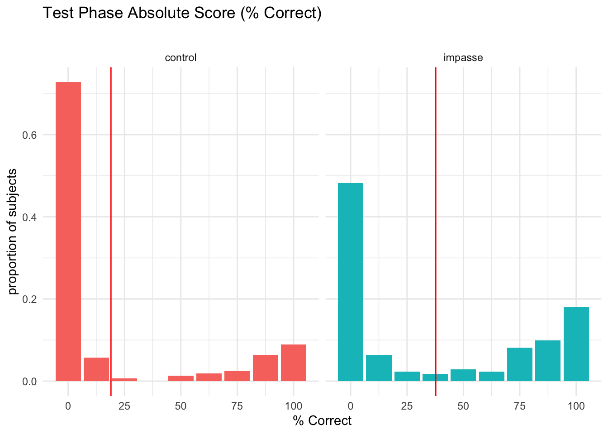
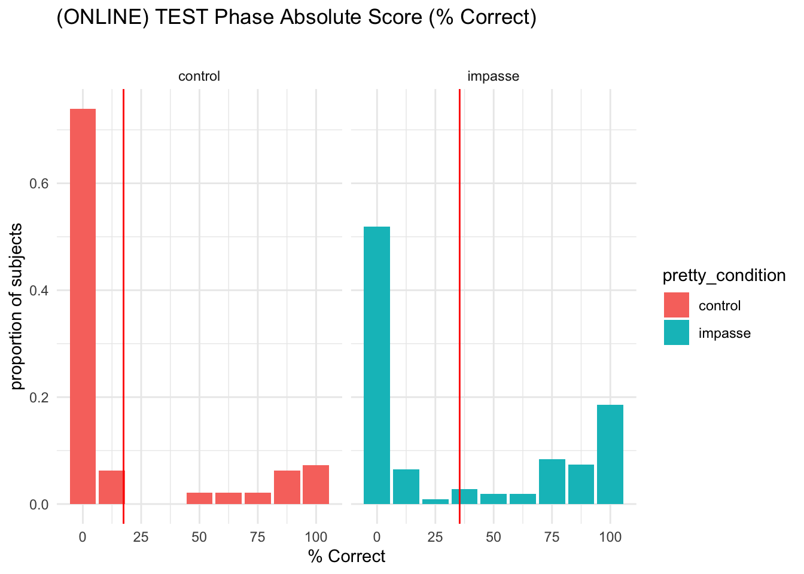
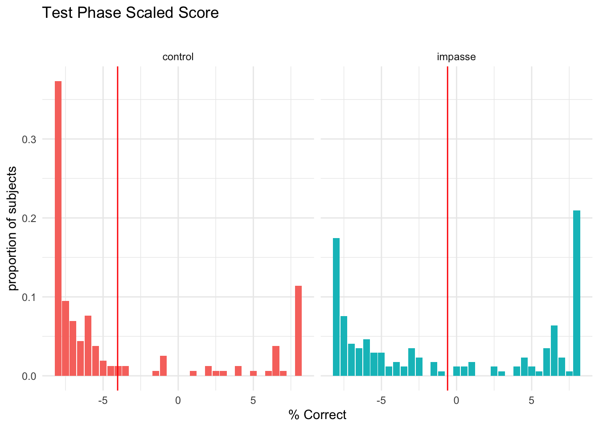
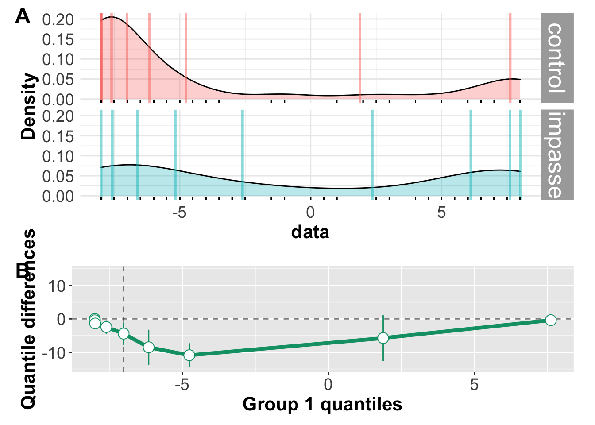
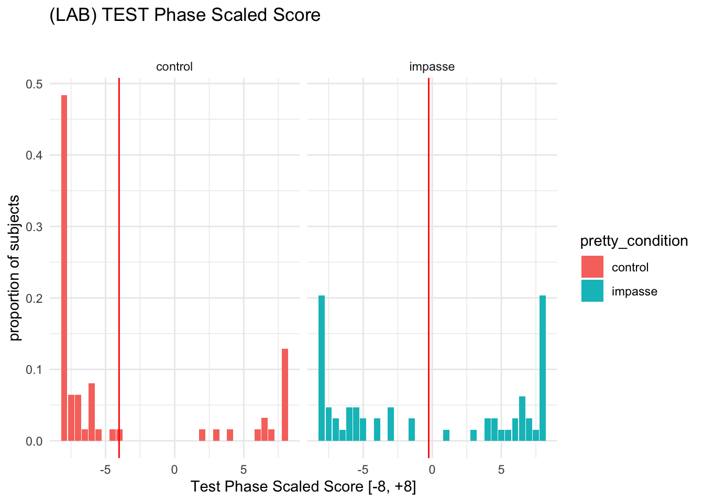
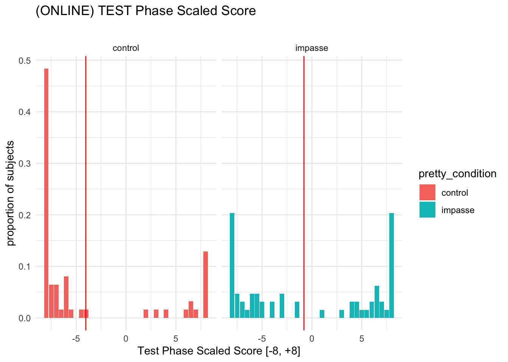
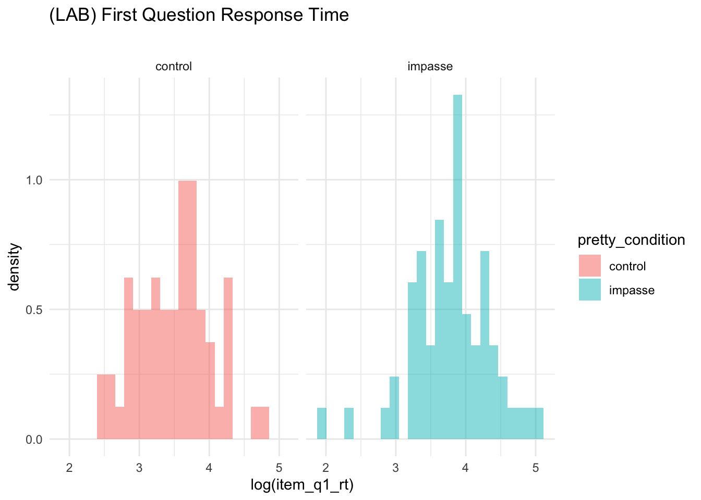

In SGC3A we set out to answer the following question: Does posing a mental impasse improve performance on the graph comprehension task?
Experimental Hypothesis Learners posed with scenario designed to evoke a mental impasse will be more likely to correct interpret the graph.
H1A | Learners in the IMPASSE condition will score higher on the TEST Phase than learners in CONTROL.
H1B | Learners in the IMPASSE condition will be more likely to correctly answer the first question than learners in CONTROL.
H1C | Learners in the IMPASSE condition will spend more time on the first question than learners in CONTROL.
Null Hypothesis No significant differences in performance will exist between learners in the IMPASSE and CONTROL conditions.
CODE
# HACK WD FOR LOCAL RUNNING?# imac = "/Users/amyraefox/Code/SGC-Scaffolding_Graph_Comprehension/SGC-X/ANALYSIS/MAIN"mbp="/Users/amyfox/Sites/RESEARCH/SGC—Scaffolding Graph Comprehension/SGC-X/ANALYSIS/MAIN"setwd(mbp)#LOAD SHIFT FUNCTION RESOURCESsource("analysis/utils/shift_function/Rallfun-v30.txt")source("analysis/utils/shift_function/wilcox_modified.txt")source("analysis/utils/shift_function/rgar_visualisation.txt")source("analysis/utils/shift_function/rgar_utils.txt")#IMPORT DATA df_items<-read_rds('analysis/SGC3A/data/2-scored-data/sgc3a_scored_items.rds')df_subjects<-read_rds('analysis/SGC3A/data/2-scored-data/sgc3a_scored_participants.rds')#TRANSFORMATIONS #1. test phase absolute score as percentagedf_subjects<-df_subjects%>%mutate(
DV_percent_test_NABS =(item_test_NABS/8)*100#for 8 Qs in test phase)#SEPARATE ITEM DATA BY QUESTION TYPEdf_scaffold<-df_items%>%filter(q<6)df_test<-df_items%>%filter(q>6)%>%filter(q%nin%c(6,9))df_nondiscrim<-df_items%>%filter(q%in%c(6,9))df_lab<-df_subjects%>%filter(pretty_mode=="laboratory")df_online<-df_subjects%>%filter(pretty_mode=="online-replication")
H1A | TEST PHASE ACCURACY
On the TEST Phase of the graph comprehension task (the final 8 questions, encountered after the 5 scaffolded questions) does the impasse condition affect performance on the graph comprehension task?
Research Question
Does posing a mental impasse improve performance?
Hypothesis
(H1A) Participants in the IMPASSE condition will have significantly higher TEST PHASE performance than those in the CONTROL condition.
Analysis Strategy
OLS Linear Regression DV_percent_test_NABS ~ condition (absolute scoring)
OLS Linear Regression item_test_SCALED ~ condition (scaled scoring)
Alternatives
Exploring alternatives. Simple linear regression models do a poor job of fitting the (bimodal) outcome distributions (both absolute and scaled scores)
Hurdle model (mixture model w/ binomial + count)
Negative Binomial / Zero Inflated Negative Binom for overdispersed count?
Beta regression?
Other way to account for the severe bimodality?
“shift function” way to characterize difference in bimodal distributions
Inference
TODOwhen done
Test Phase Absolute Score
Shift in Modal Mass
CODE
#HISTOGRAMstats=df_subjects%>%group_by(pretty_condition)%>%dplyr::summarise(mean =mean(DV_percent_test_NABS))gf_props(~DV_percent_test_NABS,
fill =~pretty_condition, data =df_subjects)%>%gf_facet_grid(~pretty_condition)%>%gf_vline(data =stats, xintercept =~mean, color ="red")+labs(x ="% Correct",
y ="proportion of subjects",
title ="Test Phase Absolute Score (% Correct)",
subtitle ="")+theme(legend.position ="blank")

The Effect of Condition on Total Absolute Test Score can be described as a ‘shift’ in mass between the two modes of each distribution.
FIRST, we use the Kolmogorov-Smirnov test as a Robust alternative to the t-test to test if the two distributions likely come from different populations.
CODE
#(requires shift function files loaded)#PREP DATA df<-df_subjects%>%dplyr::select(DV_percent_test_NABS, pretty_condition)%>%mutate(
data =as.numeric(DV_percent_test_NABS),
#flip order levels to correctly orient graph# gr = recode_factor(pretty_condition, "impasse" = "impasse", "control"="control")
gr =as.character(pretty_condition))%>%dplyr::select(data,gr)g1<-df%>%filter(gr=="control")%>%dplyr::pull(data)g2<-df%>%filter(gr=="impasse")%>%dplyr::pull(data)#COMPARE DISTRIBUTIONS WITH ROBUST TESTS#What do common tests say about the difference?# Kolmogorov-Smirnov test#If y is numeric, a two-sample (Smirnov) test of the null hypothesis that x and y #were drawn from the same continuous distribution is performed. Alternatively, y ...#null is X is drawn from CDF EQUAL TO Yks.test(g1,g2)
Warning in ks.test(g1, g2): p-value will be approximate in the presence of ties
Two-sample Kolmogorov-Smirnov test
data: g1 and g2
D = 0.2, p-value = 0.0001
alternative hypothesis: two-sided
CODE
print("SUGGESTS that impasse and control come from different population distributions")
[1] "SUGGESTS that impasse and control come from different population distributions"
CODE
# #null is X is NOT LESS THAN Yks.test(g1,g2, alternative ="greater")
Warning in ks.test(g1, g2, alternative = "greater"): p-value will be approximate
in the presence of ties
Two-sample Kolmogorov-Smirnov test
data: g1 and g2
D^+ = 0.2, p-value = 5e-05
alternative hypothesis: the CDF of x lies above that of y
CODE
print("SUGGESTS that true CDF of CONTROL is greater than that of IMPASSE [consistent with higher probability of low scores]")
[1] "SUGGESTS that true CDF of CONTROL is greater than that of IMPASSE [consistent with higher probability of low scores]"
Welch Two Sample t-test
data: g1 and g2
t = -4, df = 325, p-value = 2e-05
alternative hypothesis: true difference in means is not equal to 0
95 percent confidence interval:
-27.2 -10.2
sample estimates:
mean of x mean of y
19.0 37.7
CODE
#IF THIS ERRORS, consider loadling plyr (older than dplyr)# kernel density estimate + rug plot + superimposed decileskde<-plot.kde_rug_dec2(df)
You have loaded plyr after dplyr - this is likely to cause problems.
If you need functions from both plyr and dplyr, please load plyr first, then dplyr:
library(plyr); library(dplyr)
We fitted a logistic mixed model (estimated using ML and Nelder-Mead optimizer) to predict score_niceABS with condition (formula: score_niceABS ~ condition). The model included subject as random effect (formula: ~1 | subject). The model's total explanatory power is substantial (conditional R2 = 0.97) and the part related to the fixed effects alone (marginal R2) is of 5.50e-03. The model's intercept, corresponding to condition = 111, is at -9.18 (95% CI [-10.51, -7.85], p < .001). Within this model:
- The effect of condition [121] is statistically significant and positive (beta = 1.63, 95% CI [0.16, 3.11], p = 0.030; Std. beta = 1.63, 95% CI [0.16, 3.11])
Standardized parameters were obtained by fitting the model on a standardized version of the dataset. 95% Confidence Intervals (CIs) and p-values were computed using the Wald approximation.
CODE
# CONDITION SLOPE per SUBJECT INTERCEPT + FIXED CONDITIONmm2<-glmer(score_niceABS~condition+(1|subject)+(1|q) , data =df, family ="binomial")summary(mm2)
Generalized linear mixed model fit by maximum likelihood (Laplace
Approximation) [glmerMod]
Family: binomial ( logit )
Formula: score_niceABS ~ condition + (1 | subject) + (1 | q)
Data: df
AIC BIC logLik deviance df.resid
1324 1348 -658 1316 2636
Scaled residuals:
Min 1Q Median 3Q Max
-3.386 -0.014 -0.008 0.067 7.780
Random effects:
Groups Name Variance Std.Dev.
subject (Intercept) 166.294 12.896
q (Intercept) 0.543 0.737
Number of obs: 2640, groups: subject, 330; q, 8
Fixed effects:
Estimate Std. Error z value Pr(>|z|)
(Intercept) -10.562 0.733 -14.41 <2e-16 ***
condition121 1.501 0.775 1.94 0.053 .
---
Signif. codes: 0 '***' 0.001 '**' 0.01 '*' 0.05 '.' 0.1 ' ' 1
Correlation of Fixed Effects:
(Intr)
conditin121 -0.485
We fitted a logistic mixed model (estimated using ML and Nelder-Mead optimizer) to predict score_niceABS with condition (formula: score_niceABS ~ condition). The model included subject and q as random effects (formula: list(~1 | subject, ~1 | q)). The model's total explanatory power is substantial (conditional R2 = 0.98) and the part related to the fixed effects alone (marginal R2) is of 3.30e-03. The model's intercept, corresponding to condition = 111, is at -10.56 (95% CI [-12.00, -9.13], p < .001). Within this model:
- The effect of condition [121] is statistically non-significant and positive (beta = 1.50, 95% CI [-0.02, 3.02], p = 0.053; Std. beta = 1.50, 95% CI [-0.02, 3.02])
Standardized parameters were obtained by fitting the model on a standardized version of the dataset. 95% Confidence Intervals (CIs) and p-values were computed using the Wald approximation.
CODE
# check_model(mm2)# SUBJECT INTERCEPT + Q INTERCEPT + FIXED CONDITION# DOESN'T CONVERGE# mm3 <- glmer(score_niceABS ~ condition + q + (1 | subject), data = df, family = "binomial")# summary(mm3)# report(mm3)#RANDOM ONLYmm.r0<-glmer(score_niceABS~(1|subject), data =df, family ="binomial")summary(mm.r0)
Generalized linear mixed model fit by maximum likelihood (Laplace
Approximation) [glmerMod]
Family: binomial ( logit )
Formula: score_niceABS ~ (1 | subject)
Data: df
AIC BIC logLik deviance df.resid
1388 1400 -692 1384 2638
Scaled residuals:
Min 1Q Median 3Q Max
-2.5320 -0.0121 -0.0121 0.1117 2.7246
Random effects:
Groups Name Variance Std.Dev.
subject (Intercept) 132 11.5
Number of obs: 2640, groups: subject, 330
Fixed effects:
Estimate Std. Error z value Pr(>|z|)
(Intercept) -8.66 0.55 -15.8 <2e-16 ***
---
Signif. codes: 0 '***' 0.001 '**' 0.01 '*' 0.05 '.' 0.1 ' ' 1
We fitted a constant (intercept-only) logistic mixed model (estimated using ML and Nelder-Mead optimizer) to predict score_niceABS (formula: score_niceABS ~ 1). The model included subject as random effect (formula: ~1 | subject). . The model's intercept is at -8.66 (95% CI [-9.74, -7.59], p < .001). Within this model:
- ()
Standardized parameters were obtained by fitting the model on a standardized version of the dataset. 95% Confidence Intervals (CIs) and p-values were computed using the Wald approximation.
CODE
#RANDOM ONLYmm.r1<-glmer(score_niceABS~(1|subject)+(1|q), data =df, family ="binomial")summary(mm.r1)
Generalized linear mixed model fit by maximum likelihood (Laplace
Approximation) [glmerMod]
Family: binomial ( logit )
Formula: score_niceABS ~ (1 | subject) + (1 | q)
Data: df
AIC BIC logLik deviance df.resid
1326 1344 -660 1320 2637
Scaled residuals:
Min 1Q Median 3Q Max
-3.396 -0.011 -0.008 0.066 7.858
Random effects:
Groups Name Variance Std.Dev.
subject (Intercept) 180.606 13.44
q (Intercept) 0.563 0.75
Number of obs: 2640, groups: subject, 330; q, 8
Fixed effects:
Estimate Std. Error z value Pr(>|z|)
(Intercept) -9.995 0.596 -16.8 <2e-16 ***
---
Signif. codes: 0 '***' 0.001 '**' 0.01 '*' 0.05 '.' 0.1 ' ' 1
We fitted a constant (intercept-only) logistic mixed model (estimated using ML and Nelder-Mead optimizer) to predict score_niceABS (formula: score_niceABS ~ 1). The model included subject and q as random effects (formula: list(~1 | subject, ~1 | q)). . The model's intercept is at -10.00 (95% CI [-11.16, -8.83], p < .001). Within this model:
- ()
Standardized parameters were obtained by fitting the model on a standardized version of the dataset. 95% Confidence Intervals (CIs) and p-values were computed using the Wald approximation.
We fitted a linear model (estimated using OLS) to predict DV_percent_test_NABS with pretty_condition (formula: DV_percent_test_NABS ~ pretty_condition). The model explains a statistically significant and weak proportion of variance (R2 = 0.06, F(1, 124) = 7.89, p = 0.006, adj. R2 = 0.05). The model's intercept, corresponding to pretty_condition = control, is at 21.37 (95% CI [11.21, 31.53], t(124) = 4.16, p < .001). Within this model:
- The effect of pretty condition [impasse] is statistically significant and positive (beta = 20.23, 95% CI [5.97, 34.49], t(124) = 2.81, p = 0.006; Std. beta = 0.49, 95% CI [0.14, 0.83])
Standardized parameters were obtained by fitting the model on a standardized version of the dataset. 95% Confidence Intervals (CIs) and p-values were computed using the Wald approximation.
CODE
#print model equationeq<-extract_eq(lab.testabs.lm1, use_coefs =TRUE)
CODE
#MODEL ESTIMATES WITH UNCERTAINTY#setup references m<-lab.testabs.lm1df<-df_labcall<-m$call%>%as.character()# uncertainty model visualizationdf%>%data_grid(pretty_condition)%>%augment(m, newdata =., se_fit =TRUE)%>%ggplot(aes(y =pretty_condition, color =pretty_condition))+stat_halfeye( scale =.5,
aes(
xdist =dist_student_t(df =df.residual(m), mu =.fitted, sigma =.se.fit),
fill =stat(cut_cdf_qi(cdf,
.width =c(.90, .95),
labels =scales::percent_format()))))+scale_fill_brewer(direction =-1)+labs(title ="(LAB) Test Phase Accuracy ~ Condition",
x ="model predicted mean (% correct)", y ="Condition", fill ="Interval",
subtitle =paste("lm(",call[2],")"))+theme(legend.position ="blank")
OLS Linear Regression on % correct in the TEST PHASE shows that condition explains a small but statistically significant amount of variance (impasse > control). However, the model is a poor fit to the data: (1) the model predictions for each group are closer to the anitimode of each of distribution than the group modes, and (2) the distribution of residuals is not normal.
(Online Replication)
Visualization
CODE
#HISTOGRAMstats=df_online%>%group_by(pretty_condition)%>%dplyr::summarise(mean =mean(DV_percent_test_NABS)*100)gmean=df_online%>%dplyr::summarise(mean =mean(DV_percent_test_NABS)*100)gf_props(~DV_percent_test_NABS*100, fill =~pretty_condition, data =df_online)%>%gf_facet_grid(~pretty_condition)%>%gf_vline(data =stats, xintercept =~mean, color ="red")+labs(x ="% Correct",
y ="proportion of subjects",
title ="(ONLINE) TEST Phase Absolute Score (% Correct)",
subtitle ="")+theme_minimal()

Model
CODE
#SCORE predicted by CONDITIONrep.testabs.lm1<-lm(DV_percent_test_NABS~pretty_condition, data =df_online)paste("Model")
# report(m1) #sanity check#print model equationeq<-extract_eq(rep.testabs.lm1)
Model equation $$ = + {1}({}) +
$$
For online replication an OLS linear regression predicting test-phase (% correct) by experimental condition explains a statistically significant though small 5% variance in accuracy (F(1,202) = 10.8, p < 0.01). The estimated beta coefficient (\(\beta\) = 0.18, 95% CI [0.07, 0.29]) predicts that participants in the impasse condition will on average score 18% higher than those in the control condition.
CODE
#MODEL ESTIMATES WITH UNCERTAINTY#setup references m<-rep.testabs.lm1df<-df_onlinecall<-m$call%>%as.character()# uncertainty model visualizationdf%>%data_grid(pretty_condition)%>%augment(m, newdata =., se_fit =TRUE)%>%ggplot(aes(y =pretty_condition, color =pretty_condition))+stat_halfeye( scale =.5,
aes(
xdist =dist_student_t(df =df.residual(m), mu =.fitted, sigma =.se.fit),
fill =stat(cut_cdf_qi(cdf,
.width =c(.90, .95),
labels =scales::percent_format()))))+scale_fill_brewer(direction =-1)+labs(title ="(ONLINE) Test Phase Accuracy ~ Condition",
x ="model predicted mean (% correct)", y ="Condition", fill ="Interval",
subtitle =paste("lm(",call[2],")"))+theme(legend.position ="blank")
For in person collection OLS Linear Regression on % correct in the TEST PHASE shows that condition explains a small but statistically significant amount of variance (impasse > control). However, the model is a poor fit to the data: (1) the model predictions for each group are closer to the anitimode of each of distribution than the group modes, and (2) the distribution of residuals is not normal, and the LM assumptions of homogeneity of variance (between groups) and homogeneity of error variance appears to be violated.
Test Phase Scaled Score
While Absolute Score (as # or % correct) gives an indication of accuracy, it does not differentiate between different kinds of incorrect answers. The Scaled score includes this extra information see ?sec-scoring-scaledScore
Shift in Modal Mass
CODE
#HISTOGRAMstats=df_subjects%>%group_by(pretty_condition)%>%dplyr::summarise(mean =mean(item_test_SCALED))gf_props(~item_test_SCALED,
fill =~pretty_condition, data =df_subjects)%>%gf_facet_grid(~pretty_condition)%>%gf_vline(data =stats, xintercept =~mean, color ="red")+labs(x ="% Correct",
y ="proportion of subjects",
title ="Test Phase Scaled Score",
subtitle ="")+theme(legend.position ="blank")

The Effect of Condition on Test Phase Scaled Score can be described as a ‘shift’ in mass between the two modes of each distribution.
FIRST, we use the Kolmogorov-Smirnov test as a Robust alternative to the t-test to test if the two distributions likely come from different populations.
CODE
#(requires shift function files loaded)#PREP DATA df<-df_subjects%>%dplyr::select(item_test_SCALED, pretty_condition)%>%mutate(
data =as.numeric(item_test_SCALED),
#flip order levels to correctly orient graph# gr = recode_factor(pretty_condition, "impasse" = "impasse", "control"="control")
gr =as.character(pretty_condition))%>%dplyr::select(data,gr)g1<-df%>%filter(gr=="control")%>%dplyr::pull(data)g2<-df%>%filter(gr=="impasse")%>%dplyr::pull(data)#COMPARE DISTRIBUTIONS WITH ROBUST TESTS#What do common tests say about the difference?# Kolmogorov-Smirnov test#If y is numeric, a two-sample (Smirnov) test of the null hypothesis that x and y #were drawn from the same continuous distribution is performed. Alternatively, y ...#null is X is drawn from CDF EQUAL TO Yks.test(g1,g2)
Warning in ks.test(g1, g2): p-value will be approximate in the presence of ties
Two-sample Kolmogorov-Smirnov test
data: g1 and g2
D = 0.3, p-value = 1e-06
alternative hypothesis: two-sided
CODE
print("SUGGESTS that impasse and control come from different population distributions")
[1] "SUGGESTS that impasse and control come from different population distributions"
CODE
# #null is X is NOT LESS THAN Yks.test(g1,g2, alternative ="greater")
Warning in ks.test(g1, g2, alternative = "greater"): p-value will be approximate
in the presence of ties
Two-sample Kolmogorov-Smirnov test
data: g1 and g2
D^+ = 0.3, p-value = 6e-07
alternative hypothesis: the CDF of x lies above that of y
CODE
print("SUGGESTS that true CDF of CONTROL is greater than that of IMPASSE [consistent with higher probability of low scores]")
[1] "SUGGESTS that true CDF of CONTROL is greater than that of IMPASSE [consistent with higher probability of low scores]"
Welch Two Sample t-test
data: g1 and g2
t = -5, df = 327, p-value = 8e-07
alternative hypothesis: true difference in means is not equal to 0
95 percent confidence interval:
-4.77 -2.09
sample estimates:
mean of x mean of y
-4.032 -0.599
CODE
#IF THIS ERRORS, consider loadling plyr (older than dplyr)# kernel density estimate + rug plot + superimposed decileskde<-plot.kde_rug_dec2(df)# kde# compute shift functionout<-shifthd(g1, g2, nboot=200)# plot shift functionsf<-plot.sf(data=out)# function from rgar_visualisation.txt# sf# combine KDE + SFplot_grid(kde, sf, labels=c("A", "B"), ncol =1, nrow =2, rel_heights =c(1.5, 1),label_size =18,hjust =-1,scale=.95)

Linear Regression
(In Person)
Visualization
CODE
#HISTOGRAMstats=df_lab%>%group_by(pretty_condition)%>%dplyr::summarise(mean =mean(item_test_SCALED))gf_props(~item_test_SCALED, fill =~pretty_condition, data =df_lab)%>%gf_facet_grid(~pretty_condition)%>%gf_vline(data =stats, xintercept =~mean, color ="red")+labs(x ="Test Phase Scaled Score [-8, +8]",
y ="proportion of subjects",
title ="(LAB) TEST Phase Scaled Score ",
subtitle ="")+theme_minimal()

Model
CODE
#SCORE predicted by CONDITIONlab.test_scaled.lm1<-lm(item_test_SCALED~pretty_condition, data =df_lab)paste("Model")
# report(m1) #sanity check#print model equationeq<-extract_eq(lab.test_scaled.lm1, use_coefs =TRUE)
Model equation\[
\operatorname{\widehat{item\_test\_SCALED}} = -4.02 + 3.77(\operatorname{pretty\_condition}_{\operatorname{impasse}})
\]
For (In Person) an OLS linear regression predicting test-phase (% correct) by experimental condition explains a statistically significant though small 8% variance in accuracy (F(1,124) = 10.8, p < 0.005). The estimated beta coefficient (\(\beta\) = 3.77, 95% CI [1.49, 6.04]) predicts that participants in the impasse condition will on average 4 points higher than those in the control condition.
CODE
#MODEL ESTIMATES WITH UNCERTAINTY#setup references m<-lab.test_scaled.lm1df<-df_labcall<-m$call%>%as.character()# uncertainty model visualizationdf%>%data_grid(pretty_condition)%>%augment(m, newdata =., se_fit =TRUE)%>%ggplot(aes(y =pretty_condition, color =pretty_condition))+stat_halfeye( scale =.5,
aes(
xdist =dist_student_t(df =df.residual(m), mu =.fitted, sigma =.se.fit),
fill =stat(cut_cdf_qi(cdf,
.width =c(.90, .95),
labels =scales::percent_format()))))+scale_fill_brewer(direction =-1)+labs(title ="(LAB) Test Phase Scaled Score ~ Condition",
x ="model predicted mean", y ="Condition", fill ="Interval",
subtitle =paste("lm(",call[2],")"))+theme(legend.position ="blank")
OLS Linear Regression on SCALED SCORE in the TEST PHASE shows that condition explains a small but statistically significant amount of variance (impasse > control). However, the model is a poor fit to the data: (1) the model predictions for each group are closer to the anitimode of each of distribution than the group modes, and (2) the distribution of residuals is not normal. (Assumptions of homogenity of variance across groups, and homogeneity of variance in residuals are met)
(Online Replication)
Visualization
CODE
#HISTOGRAMstats=df_online%>%group_by(pretty_condition)%>%dplyr::summarise(mean =mean(item_test_SCALED))gf_props(~item_test_SCALED, fill =~pretty_condition, data =df_lab)%>%gf_facet_grid(~pretty_condition)%>%gf_vline(data =stats, xintercept =~mean, color ="red")+labs(x ="Test Phase Scaled Score [-8, +8]",
y ="proportion of subjects",
title ="(ONLINE) TEST Phase Scaled Score ",
subtitle ="")+theme_minimal()

Model
CODE
#SCORE predicted by CONDITIONrep.test_scaled.lm1<-lm(item_test_SCALED~pretty_condition, data =df_online)paste("Model")
# report(m1) #sanity check#print model equationeq<-extract_eq(rep.test_scaled.lm1, use_coefs =TRUE)
Model equation $$ = -4.04 + 3.24(_{})
$$
For online replication an OLS linear regression predicting test-phase (% correct) by experimental condition explains a statistically significant though small 7% variance in accuracy (F(1,202) = 14.3, p < 0.001). The estimated beta coefficient (\(\beta\) = 3.24, 95% CI [1.55, 4.62]) predicts that participants in the impasse condition will on average 3 points higher than those in the control condition.
CODE
#MODEL ESTIMATES WITH UNCERTAINTY#setup references m<-rep.test_scaled.lm1df<-df_onlinecall<-m$call%>%as.character()# uncertainty model visualizationdf%>%data_grid(pretty_condition)%>%augment(m, newdata =., se_fit =TRUE)%>%ggplot(aes(y =pretty_condition, color =pretty_condition))+stat_halfeye( scale =.5,
aes(
xdist =dist_student_t(df =df.residual(m), mu =.fitted, sigma =.se.fit),
fill =stat(cut_cdf_qi(cdf,
.width =c(.90, .95),
labels =scales::percent_format()))))+scale_fill_brewer(direction =-1)+labs(title ="(LAB) Test Phase Scaled Score ~ Condition",
x ="model predicted mean (scaled score)", y ="Condition", fill ="Interval",
subtitle =paste("lm(",call[2],")"))+theme(legend.position ="blank")
For online replication an OLS Linear Regression on SCALED SCORE in the TEST PHASE shows that condition explains a small but statistically significant amount of variance (impasse > control). However, the model is a poor fit to the data: (1) the model predictions for each group are closer to the anitimode of each of distribution than the group modes, and (2) the distribution of residuals is not normal. (Assumptions of homogenity of variance across groups, and homogeneity of variance in residuals are met)
H1B | Q1 ACCURACY
The graph comprehension tasks includes 15 questions completed in sequence. But the first question the reader encounters (Q1) is the most important, as it is their first exposure to the unconventional triangular coordinate system.
TODO: - does impasse yield different exploration behavior? (characterize mouse) - does impasse yield more time on task? (characterize response time ? number of answers then de-selected?)
TODO: Think about characterizing how variable the interpretations are across a participant. Do they form an interpretation and hold it constant? Or do they change question to question.
Response Accuracy of First Question by Condition
Chi Square | Accuracy ~ Condition
Research Question
Does the frequency of correct (vs) incorrect responses on the first question differ by condition? [Is response accuracy independent of condition?]
Analysis Strategy
Chi-Square test of independence on outcome score_niceABS by condition for df_items where q == 1
Justification
(0) simplest method to examine independence of two categorical factors; logistic regression is recommended for binomial ~ continuous
(1) independence assumption : as we only consider responses on the first question, each observation corresponds to an individual subject, and are thus independent
(2) frequency size assumption : expected frequency in each cell of the contingency table is greater than 5 (more than 5 correct , more than 5 incorrect responses)
Steps
(1) Express raw data as contingency table & visualize
(2) Calculate Chi-Squared Statistic and p-value
(3) Interpret Odds-Ratio as effect size
Inference
Lab For the (In Person) (n=126) the Pearson’s Chi-squared test (of independence) indicates a relationship between response accuracy on the first question and experimental condition approaching statistical significance, \(\chi^2\) (1) = 10.3, p = 0.07. In this particular data sample, the odds ratio (2.18, p = 0.055, 95% CI [0.982, +Inf]) indicates that the odds of producing a correct response on the first question were 2.18 times greater if a subject was in the impasse condition, than in the control condition.
Online For online data collection (n=204), a Pearson’s Chi-squared test (of independence) indicates a statistically significant relationship between response accuracy on the first question and experimental condition, \(\chi^2\) (1) = 7.26, p = 0.009. The odds ratio (2.68, p = 0.005, 95% CI [1.37, +Inf]) indicates that the odds of producing a correct response on the first question were 2.68 times greater if a subject was in the impasse condition, than in the control condition.
CODE
#FITER THE DATASETdf=df_items%>%filter(q==1)#PROPORTIONAL BAR CHARTgf_props(~score_niceABS, data =df, fill =~mode)%>%gf_facet_grid(mode~condition, labeller =label_both)+labs(x ="Correct Response on Q 1",
title ="Accuracy on First Question by Condition (Both Modalities)",
subtitle="Impasse Condition yields a greater proportion of correct responses than control ")+theme_minimal()+theme(legend.position ="none")
A proportional bar chart visualizing the proportion of incorrect (x =0) vs correct (x = 1) responses in each condition (right/left facet) for each data collection modality (top/bottom) reveal that the pattern of responses appear the same regardless of the data collection modality. In both data collection sessions, the proportion of incorrect responses is much greater than the proportion of correct responses, regardless of condition. In the impasse condition, the difference in proportions is smaller than the control condition (i.e. There are more correct responses in the impasse condition than the control condition).
CODE
#MOSAIC PLOTvcd::mosaic(main="Accuracy on First Question by Condition (Both Modalities)",
data =df, score_niceABS~condition, rot_labels=c(0,90,0,0),
offset_varnames =c(left =4.5), offset_labels =c(left =-0.5),just_labels ="right",
spacing =spacing_dimequal(unit(1:2, "lines")))
Proportion of Correct Responses On First Item (Both Modalities)
0
1
Sum
111
0.412
0.067
0.479
121
0.373
0.148
0.521
Sum
0.785
0.215
1.000
A mosaic plot condition by response accuracy on the first question (across both data collection modalities) reveals the same pattern (the mosaic plot is an alternative visualization technique to the proportional bar chart). The relative size of condition boxes (111 vs 121) reflects that the sample is roughly evenly split across experimental conditions. The difference in size between 0 (incorrect) and 1 (correct) reflects that the proportion of correct responses (1) is greater in the impasse condition (121).
Next, we compute a contingency table and Pearson’s Chi-Squared test for each data collection modality.
CODE
df=df_items%>%filter(q==1)%>%filter(mode=="lab-synch")CrossTable( x =df$condition, y =df$score_niceABS, fisher =TRUE, chisq=TRUE, expected =TRUE, sresid =TRUE)
Cell Contents
|-------------------------|
| N |
| Expected N |
| Chi-square contribution |
| N / Row Total |
| N / Col Total |
| N / Table Total |
|-------------------------|
Total Observations in Table: 126
| df$score_niceABS
df$condition | 0 | 1 | Row Total |
-------------|-----------|-----------|-----------|
111 | 52 | 10 | 62 |
| 47.730 | 14.270 | |
| 0.382 | 1.278 | |
| 0.839 | 0.161 | 0.492 |
| 0.536 | 0.345 | |
| 0.413 | 0.079 | |
-------------|-----------|-----------|-----------|
121 | 45 | 19 | 64 |
| 49.270 | 14.730 | |
| 0.370 | 1.238 | |
| 0.703 | 0.297 | 0.508 |
| 0.464 | 0.655 | |
| 0.357 | 0.151 | |
-------------|-----------|-----------|-----------|
Column Total | 97 | 29 | 126 |
| 0.770 | 0.230 | |
-------------|-----------|-----------|-----------|
Statistics for All Table Factors
Pearson's Chi-squared test
------------------------------------------------------------
Chi^2 = 3.27 d.f. = 1 p = 0.0707
Pearson's Chi-squared test with Yates' continuity correction
------------------------------------------------------------
Chi^2 = 2.55 d.f. = 1 p = 0.111
Fisher's Exact Test for Count Data
------------------------------------------------------------
Sample estimate odds ratio: 2.18
Alternative hypothesis: true odds ratio is not equal to 1
p = 0.0909
95% confidence interval: 0.86 5.84
Alternative hypothesis: true odds ratio is less than 1
p = 0.979
95% confidence interval: 0 5.03
Alternative hypothesis: true odds ratio is greater than 1
p = 0.0547
95% confidence interval: 0.982 Inf
For the (In Person) (n=126) the Pearson’s Chi-squared test (of independence) indicates a relationship between response accuracy on the first question and experimental condition approaching statistical significance, \(\chi^2\) (1) = 10.3, p = 0.07. Thus we have insufficient evidence to reject the null hypothesis that the odds ratio is equal to 1. In this particular data sample, the odds ratio (Odds Ratio = 2.18, p = 0.055, 95% CI [0.982, +Inf]) indicates that the odds of producing a correct response on the first question were 2.18 times greater if a subject was in the impasse condition, than in the control condition .
CODE
df=df_items%>%filter(q==1)%>%filter(mode=="asynch")CrossTable( x =df$condition, y =df$score_niceABS, fisher =TRUE, chisq=TRUE, expected =TRUE, sresid =TRUE)
Cell Contents
|-------------------------|
| N |
| Expected N |
| Chi-square contribution |
| N / Row Total |
| N / Col Total |
| N / Table Total |
|-------------------------|
Total Observations in Table: 204
| df$score_niceABS
df$condition | 0 | 1 | Row Total |
-------------|-----------|-----------|-----------|
111 | 84 | 12 | 96 |
| 76.235 | 19.765 | |
| 0.791 | 3.050 | |
| 0.875 | 0.125 | 0.471 |
| 0.519 | 0.286 | |
| 0.412 | 0.059 | |
-------------|-----------|-----------|-----------|
121 | 78 | 30 | 108 |
| 85.765 | 22.235 | |
| 0.703 | 2.711 | |
| 0.722 | 0.278 | 0.529 |
| 0.481 | 0.714 | |
| 0.382 | 0.147 | |
-------------|-----------|-----------|-----------|
Column Total | 162 | 42 | 204 |
| 0.794 | 0.206 | |
-------------|-----------|-----------|-----------|
Statistics for All Table Factors
Pearson's Chi-squared test
------------------------------------------------------------
Chi^2 = 7.26 d.f. = 1 p = 0.00707
Pearson's Chi-squared test with Yates' continuity correction
------------------------------------------------------------
Chi^2 = 6.35 d.f. = 1 p = 0.0117
Fisher's Exact Test for Count Data
------------------------------------------------------------
Sample estimate odds ratio: 2.68
Alternative hypothesis: true odds ratio is not equal to 1
p = 0.00894
95% confidence interval: 1.23 6.17
Alternative hypothesis: true odds ratio is less than 1
p = 0.998
95% confidence interval: 0 5.42
Alternative hypothesis: true odds ratio is greater than 1
p = 0.00539
95% confidence interval: 1.37 Inf
For online data collection (n=204), a Pearson’s Chi-squared test (of independence) indicates a statistically significant relationship between response accuracy on the first question and experimental condition, \(\chi^2\) (1) = 7.26, p = 0.009. Thus we have sufficient evidence to reject the null hypothesis that the odds ratio is equal to 1. The odds ratio (Odds Ratio = 2.68, p = 0.005, 95% CI [1.37, +Inf]) indicates that the odds of producing a correct response on the first question were 2.68 times greater if a subject was in the impasse condition, than in the control condition .
CODE
df=df_items%>%filter(q==1)CrossTable( x =df$condition, y =df$score_niceABS, fisher =TRUE, chisq=TRUE, expected =TRUE, sresid =TRUE)
Cell Contents
|-------------------------|
| N |
| Expected N |
| Chi-square contribution |
| N / Row Total |
| N / Col Total |
| N / Table Total |
|-------------------------|
Total Observations in Table: 330
| df$score_niceABS
df$condition | 0 | 1 | Row Total |
-------------|-----------|-----------|-----------|
111 | 136 | 22 | 158 |
| 124.006 | 33.994 | |
| 1.160 | 4.232 | |
| 0.861 | 0.139 | 0.479 |
| 0.525 | 0.310 | |
| 0.412 | 0.067 | |
-------------|-----------|-----------|-----------|
121 | 123 | 49 | 172 |
| 134.994 | 37.006 | |
| 1.066 | 3.887 | |
| 0.715 | 0.285 | 0.521 |
| 0.475 | 0.690 | |
| 0.373 | 0.148 | |
-------------|-----------|-----------|-----------|
Column Total | 259 | 71 | 330 |
| 0.785 | 0.215 | |
-------------|-----------|-----------|-----------|
Statistics for All Table Factors
Pearson's Chi-squared test
------------------------------------------------------------
Chi^2 = 10.3 d.f. = 1 p = 0.0013
Pearson's Chi-squared test with Yates' continuity correction
------------------------------------------------------------
Chi^2 = 9.5 d.f. = 1 p = 0.00205
Fisher's Exact Test for Count Data
------------------------------------------------------------
Sample estimate odds ratio: 2.46
Alternative hypothesis: true odds ratio is not equal to 1
p = 0.00131
95% confidence interval: 1.37 4.53
Alternative hypothesis: true odds ratio is less than 1
p = 1
95% confidence interval: 0 4.12
Alternative hypothesis: true odds ratio is greater than 1
p = 0.000928
95% confidence interval: 1.49 Inf
Combining data across both sessions (n=330), a Pearson’s Chi-squared test suggests a statistically significant relationship between response accuracy on the first question and experimental condition, \(\chi_2\) (1) = 10.3, p = 0.001. The sample odds ratio (2.46, p = 0.001, 95% CI [1.37, 4.53]) indicates that the odds of providing a correct response to the first question are 2.46 higher for subjects in the impasse condition than those in the control condition.
TODO | (multiple) Logistic Regression Model | What predicts Q1 Accuracy?
H1C | Q1 LATENCY
RESPONSE LATENCY
TODO: Investigate super high and super low response times..
TODO: Investigate appropriate models for response time data. (see: https://lindeloev.github.io/shiny-rt/).
Especially see https://lindeloev.github.io/shiny-rt/ for ideas on modelling reaction time data
Research Question
Hypothesis
Analysis Strategy
Alternatives
Inference
Q1 Response Latency
Linear Regression (Log Transform)
(In Person)
Visualization
CODE
#HISTOGRAMstats=df_lab%>%group_by(pretty_condition)%>%dplyr::summarise(mean =mean(item_q1_rt))gf_dhistogram(~log(item_q1_rt), fill =~pretty_condition, data =df_lab)%>%gf_facet_grid(~pretty_condition)+# gf_vline(data = stats, xintercept = ~mean, color = "red") +labs(title ="(LAB) First Question Response Time",,
# x = "Response Time (seconds)",# y = "proportion of participants",
subtitle ="")+theme_minimal()

Model
CODE
#SCORE predicted by CONDITIONlab.q1t.lm1<-lm(log(item_q1_rt)~pretty_condition, data =df_lab)paste("Model")
Formula contains log- or sqrt-terms. See help("standardize") for how such terms are standardized.
Formula contains log- or sqrt-terms. See help("standardize") for how such terms are standardized.
We fitted a linear model (estimated using OLS) to predict item_q1_rt with pretty_condition (formula: log(item_q1_rt) ~ pretty_condition). The model explains a statistically significant and weak proportion of variance (R2 = 0.08, F(1, 124) = 10.61, p = 0.001, adj. R2 = 0.07). The model's intercept, corresponding to pretty_condition = control, is at 3.48 (95% CI [3.35, 3.62], t(124) = 50.69, p < .001). Within this model:
- The effect of pretty condition [impasse] is statistically significant and positive (beta = 0.31, 95% CI [0.12, 0.51], t(124) = 3.26, p = 0.001; Std. beta = 0.21, 95% CI [0.09, 0.34])
Standardized parameters were obtained by fitting the model on a standardized version of the dataset. 95% Confidence Intervals (CIs) and p-values were computed using the Wald approximation.
CODE
#print model equationeq<-extract_eq(lab.q1t.lm1, use_coefs =TRUE)
CODE
#MODEL ESTIMATES WITH UNCERTAINTY#setup references #lab.q1t.lm1 <- lm(log(item_q1_rt) ~ condition, data = df_lab)m<-lab.q1t.lm1df<-df_labcall<-m$call%>%as.character()# uncertainty model visualizationdf<-df%>%data_grid(pretty_condition)%>%augment(m, newdata =., se_fit =TRUE)#transform logdf$.fitted<-exp(df$.fitted)df$.se.fit<-exp(df$.se.fit)df%>%ggplot(aes(y =pretty_condition, color =pretty_condition))+stat_halfeye( scale =.5,
aes(
xdist =dist_student_t(df =df.residual(m), mu =.fitted, sigma =.se.fit),
fill =stat(cut_cdf_qi(cdf,
.width =c(.90, .95),
labels =scales::percent_format()))))+scale_fill_brewer(direction =-1)+labs(title ="(LAB) Q1 Response Latency ~ Condition",
x ="model predicted mean (seconds)", y ="Condition", fill ="Interval",
subtitle =paste("lm(",call[2],")"),
caption ="note: model log(predictions) have exponentiated to original scale")+theme(legend.position ="blank")
OLS Linear Regression on Q1 response time shows that condition explains a small but statistically significant amount of variance (impasse > control). However, the model violates the assumption of normally distributed residuals.
(Online Replication)
Visualization
CODE
#HISTOGRAMstats=df_online%>%group_by(pretty_condition)%>%dplyr::summarise(mean =mean(item_q1_rt))gf_dhistogram(~log(item_q1_rt), fill =~pretty_condition, data =df_lab)%>%gf_facet_grid(~pretty_condition)+# gf_vline(data = stats, xintercept = ~mean, color = "red") +labs(title ="(ONLINE) First Question Response Time",
# x = "Response Time (seconds)",# y = "proportion of participants",
subtitle ="")+theme_minimal()
Model
CODE
#SCORE predicted by CONDITIONrep.q1t.lm1<-lm(log(item_q1_rt)~pretty_condition, data =df_online)paste("Model")
Formula contains log- or sqrt-terms. See help("standardize") for how such terms are standardized.
Formula contains log- or sqrt-terms. See help("standardize") for how such terms are standardized.
We fitted a linear model (estimated using OLS) to predict item_q1_rt with pretty_condition (formula: log(item_q1_rt) ~ pretty_condition). The model explains a statistically significant and weak proportion of variance (R2 = 0.08, F(1, 202) = 17.39, p < .001, adj. R2 = 0.07). The model's intercept, corresponding to pretty_condition = control, is at 3.25 (95% CI [3.11, 3.39], t(202) = 44.36, p < .001). Within this model:
- The effect of pretty condition [impasse] is statistically significant and positive (beta = 0.42, 95% CI [0.22, 0.62], t(202) = 4.17, p < .001; Std. beta = 0.21, 95% CI [0.11, 0.31])
Standardized parameters were obtained by fitting the model on a standardized version of the dataset. 95% Confidence Intervals (CIs) and p-values were computed using the Wald approximation.
CODE
#print model equationeq<-extract_eq(rep.q1t.lm1, use_coefs =TRUE)
CODE
#MODEL ESTIMATES WITH UNCERTAINTY#setup references # rep.q1t.lm1 <- lm(log(item_q1_rt) ~ condition, data = df_online)m<-rep.q1t.lm1df<-df_onlinecall<-m$call%>%as.character()# uncertainty model visualizationdf<-df%>%data_grid(pretty_condition)%>%augment(m, newdata =., se_fit =TRUE)#transform logdf$.fitted<-exp(df$.fitted)df$.se.fit<-exp(df$.se.fit)df%>%ggplot(aes(y =pretty_condition, color =pretty_condition))+stat_halfeye( scale =.5,
aes(
xdist =dist_student_t(df =df.residual(m), mu =.fitted, sigma =.se.fit),
fill =stat(cut_cdf_qi(cdf,
.width =c(.90, .95),
labels =scales::percent_format()))))+scale_fill_brewer(direction =-1)+labs(title ="(ONLINE) Q1 Response Latency ~ Condition",
x ="model predicted mean (seconds)", y ="Condition", fill ="Interval",
subtitle =paste("lm(",call[2],")"),
caption ="note: model log(predictions) have exponentiated to original scale")+theme(legend.position ="blank")
OLS Linear Regression on Q1 response time shows that condition explains a small but statistically significant amount of variance (impasse > control). However, the model violates the assumption of normally distributed residuals.
We fitted a linear model (estimated using OLS) to predict item_test_NABS with condition (formula: item_test_NABS ~ condition). The model explains a statistically significant and weak proportion of variance (R2 = 0.05, F(1, 328) = 18.52, p < .001, adj. R2 = 0.05). The model's intercept, corresponding to condition = 111, is at 1.52 (95% CI [1.02, 2.01], t(328) = 6.04, p < .001). Within this model:
- The effect of condition [121] is statistically significant and positive (beta = 1.50, 95% CI [0.81, 2.18], t(328) = 4.30, p < .001; Std. beta = 0.46, 95% CI [0.25, 0.67])
Standardized parameters were obtained by fitting the model on a standardized version of the dataset. 95% Confidence Intervals (CIs) and p-values were computed using the Wald approximation.
The outcome variable absolute score is clearly not normal. As it represents the cumulative number of items a participant has answered correctly, we can consider it a type of count, (ie. count of the number of questions the participant got correct) and attempt to model it using a General Linear Model with the Poisson distribution (and the default log-link function).
CODE
#POISSON#SCORE predicted by CONDITION --> POISSON DISTRIBUTIONp.1<-glm(item_test_NABS~condition, data =df_subjects, family ="poisson")paste("Model")
We fitted a poisson model (estimated using ML) to predict item_test_NABS with condition (formula: item_test_NABS ~ condition). The model's explanatory power is moderate (Nagelkerke's R2 = 0.22). The model's intercept, corresponding to condition = 111, is at 0.42 (95% CI [0.29, 0.54], p < .001). Within this model:
- The effect of condition [121] is statistically significant and positive (beta = 0.69, 95% CI [0.53, 0.84], p < .001; Std. beta = 0.69, 95% CI [0.53, 0.84])
Standardized parameters were obtained by fitting the model on a standardized version of the dataset. 95% Confidence Intervals (CIs) and p-values were computed using
We fitted a zero-inflated poisson model to predict item_test_NABS with item_q1_rt and condition (formula: item_test_NABS ~ item_q1_rt). The model's explanatory power is substantial (R2 = 0.35, adj. R2 = 0.35). The model's intercept, corresponding to item_q1_rt = 0, is at 1.65 (95% CI [1.54, 1.77], p < .001). Within this model:
- The effect of item q1 rt is statistically significant and positive (beta = 1.69e-03, 95% CI [2.52e-05, 3.35e-03], p = 0.047; Std. beta = 0.06, 95% CI [7.11e-04, 0.12])
- The effect of condition [121] is statistically significant and negative (beta = -1.06, 95% CI [-1.52, -0.59], p < .001; Std. beta = -1.06, 95% CI [-1.52, -0.59])
Standardized parameters were obtained by fitting the model on a standardized version of the dataset.
We fitted a negative-binomial model (estimated using ML) to predict item_test_NABS with condition (formula: item_test_NABS ~ condition). The model's explanatory power is weak (Nagelkerke's R2 = 0.04). The model's intercept, corresponding to condition = 111, is at 0.42 (95% CI [0.10, 0.77], p = 0.014). Within this model:
- The effect of condition [121] is statistically significant and positive (beta = 0.69, 95% CI [0.23, 1.14], p = 0.003; Std. beta = 0.69, 95% CI [0.23, 1.14])
Standardized parameters were obtained by fitting the model on a standardized version of the dataset. 95% Confidence Intervals (CIs) and p-values were computed using
#check model assumption#assumes conditional means are not equal to conditional variances#conduct likelihood ration test to compare and test [need poisson]m3<-glm(item_test_NABS~condition, family ="poisson", data =df_subjects)pchisq(2*(logLik(nb.1)-logLik(m3)), df =1, lower.tail =FALSE)
'log Lik.' 4.3e-168 (df=3)
CODE
#A large (+) log likelihood suggests that the negative binomial is more appropriate than the Poisson model#EXPONENTIATE PARAMETER ESTIMATESest<-cbind(Estimate =coef(nb.1), confint(nb.1))
The variable condition has a coefficient of 0.67, (p < 0.005). This means that for the impasse condition, the expected log count # of questions increases by 0.67. By exponentiating the estimate we see that # question correct rate for the impasse condition is nearly 2x that of the control condition.
Diagnostics ??
Zero Inflated Negative Binomial Regression
https://stats.oarc.ucla.edu/r/dae/zinb/ count data that are overdispersed and have excess zeros
Zero-inflated negative binomial regression is for modelling count variables with excessive zeros, and especially when the count data are overdispersed (mean is much larger than variance). It can help account for situations where theory suggests that excess zeros are generated by 2 separate processes, one that includes the other count values, and the other that is just the zeros, and thus that the excess zeros can be modelled independently.
Total Absolute Score (# items correct) may fit this situation, as the data are overdispersed (variance much greater than the mean) and there are are very large number of zeros. It is theoretically plausible that these excess zeros (no answers correct) are the result of a different ‘process’ … (i.e) little understanding and/or resistance to restructuring understanding of the coordinate system. However, I am not certain if it is plausible to suggest that the zeros themselves are the result of two different processes: (ie. perhaps trying to understand, and not trying to understand?) <- this could maybe be disentangled by first question latency?
The model includes: - A logistic model to model which of the two processes the zero outcome is associated with - A negative binomial model to model the count process
CODE
library(pscl)# for zeroinfl negbinomial#ZERO INFLATED NEGATIVE BINOMIALzinb.1<-zeroinfl(s_NABS~condition|condition , data =df_subjects, dist ="negbin")#before the | is the count part, after the | is the logit modelpaste("Model")
We fitted a zero-inflated negative-binomial model to predict s_NABS with condition (formula: s_NABS ~ condition). The model's explanatory power is substantial (R2 = 0.68, adj. R2 = 0.67). The model's intercept, corresponding to condition = 111, is at 1.71 (95% CI [1.41, 2.02], p < .001). Within this model:
- The effect of condition [121] is statistically non-significant and positive (beta = 0.08, 95% CI [-0.27, 0.42], p = 0.660; Std. beta = 0.08, 95% CI [-0.27, 0.42])
- The effect of condition [121] is statistically significant and negative (beta = -1.75, 95% CI [-2.53, -0.96], p < .001; Std. beta = -1.75, 95% CI [-2.53, -0.96])
Standardized parameters were obtained by fitting the model on a standardized version of the dataset.
In the count model, the coefficient for the condition is very small, and not significant (suggesting it does not contribute to the count yielding process?).
In the zero-inflation model, the coefficient for the condition variable is -1.056 and statistically significant. This suggests that the log odds of being an excessive zero decrease by 1.06 if you are in the impasse condition (exponentiate it?)
For modelling test phase absolute score (# items correct) it seems that the zero inflated negative binomial model is the best fit according to R2 and AIC, however, I am not clear on the implications of the interpretation (non significant in count process, significant on logit process), and also not clear if # items correct is truly a count process.
CODE
#uncertainty model visualization# df %>%# data_grid(pretty_condition) %>%# augment(m, newdata = ., se_fit = TRUE) %>%# ggplot(aes(y = pretty_condition)) +# stat_halfeye(# aes(xdist = dist_student_t(df = df.residual(m), # mu = .fitted, sigma = .se.fit)), scale = .5) +# # add raw data in too (scale = .5 above adjusts the halfeye height so# # that the data fit in as well)# geom_jitter(aes(x = x), data = df, pch = "|", size = 2, # position = position_nudge(y = -.15), alpha = 0.5) + # labs (title = "Model Estimates with Uncertainty", x = "model coefficient") + # theme_minimal()
class of models for count data with both overdispersion and excess zeros;
different from zero-inflated models where the excess zeros are theorized to arise from two different processes; in the hurdle model, there is a model for P(x=0) and a separate model for P(x!=0)
The model includes: - A binary logit model to model whether the observation takes a positive count or not. - a truncated Poisson or Negative binomial model that only fits positive counts
This allows us to model: (1) Does the student get any questions right? (2) How many questions does the student get right?
The following objects are masked from 'package:pscl':
hurdle, hurdle.control, hurdletest, zeroinfl, zeroinfl.control
The following object is masked from 'package:vcd':
rootogram
CODE
#install.packages("countreg", repos="http://R-Forge.R-project.org")#SYNTAX OUTCOME ~ count model predictor | hurdle predictorh.1<-pscl::hurdle(item_test_NABS~condition|condition , data =df_subjects,
zero.dist ="binomial", dist ="poisson", size =8)
Warning in optim(fn = countDist, gr = countGrad, par = c(start$count, if (dist
== : unknown names in control: size
Warning in optim(fn = zeroDist, gr = zeroGrad, par = c(start$zero, if (zero.dist
== : unknown names in control: size
CODE
h.2<-pscl::hurdle(item_test_NABS~condition|condition , data =df_subjects,
zero.dist ="binomial", dist ="negbin", size =8)
Warning in optim(fn = countDist, gr = countGrad, par = c(start$count, if (dist
== : unknown names in control: size
Warning in optim(fn = countDist, gr = countGrad, par = c(start$count, if (dist
== : unknown names in control: size
Beta regression on % correct (with standard transformation for including [0,1]) https://stats.stackexchange.com/questions/63350/how-to-interpret-the-coefficients-from-a-beta-regression
---subtitle: 'Study SGC3A | 4 Hypothesis Testing'---\newpage# Hypothesis Testing {#sec-SGC3A-hypotesting}**TODO**- HURDLE MODEL? (mixture model w/ 0 + count)- consider zero-inflated (poisson or neg binom) with \_rt as predictor of count process and condition as predictor of excess zeros- review models already created in ARCHIVE?- explore response consistency*The purpose of this notebook is test the hypotheses that determined the design of the SGC3A study.*+---------------------+| Pre-Requisite |+=====================+| 2_sgc3A_scoring.qmd |+---------------------+```{r}#| label: SETUP#| warning : false#| message : falselibrary(Hmisc) # %nin% operatorlibrary(ggpubr) #arrange plotslibrary(cowplot) #arrange shift function plotslibrary(ggformula) #easy graphslibrary(vcd) #mosaic plotslibrary(vcdExtra) #mosaic plotslibrary(kableExtra) #printing tables library(report) #easystats reportinglibrary(see) #easystats visualizationlibrary(performance) #easystats model diagnosticslibrary(qqplotr) #confint on qq plotlibrary(gmodels) #contingency table and CHISQRlibrary(equatiomatic) #extract model equationlibrary(pscl) #zeroinfl / hurdle models library(ggdist)library(broom)library(modelr)library(distributional)library(tidyverse) #ALL THE THINGS#OUTPUT OPTIONSlibrary(dplyr, warn.conflicts =FALSE)options(dplyr.summarise.inform =FALSE)options(ggplot2.summarise.inform =FALSE)options(scipen=1, digits=3)#SET GGPLOT THEMEtheme_set(theme_minimal())```**Research Questions**In SGC3A we set out to answer the following question: Does posing a mental impasse improve performance on the graph comprehension task?**Experimental Hypothesis**\*Learners posed with scenario designed to evoke a mental impasse will be more likely to correct interpret the graph.*- H1A \| Learners in the IMPASSE condition will score higher on the TEST Phase than learners in CONTROL.- H1B \| Learners in the IMPASSE condition will be more likely to correctly answer the first question than learners in CONTROL.- H1C \| Learners in the IMPASSE condition will spend more time on the first question than learners in CONTROL.**Null Hypothesis**\*No significant differences in performance will exist between learners in the IMPASSE and CONTROL conditions.*```{r}#| label: IMPORT-DATA#| warning : false#| message : false# HACK WD FOR LOCAL RUNNING?# imac = "/Users/amyraefox/Code/SGC-Scaffolding_Graph_Comprehension/SGC-X/ANALYSIS/MAIN"mbp ="/Users/amyfox/Sites/RESEARCH/SGC—Scaffolding Graph Comprehension/SGC-X/ANALYSIS/MAIN"setwd(mbp)#LOAD SHIFT FUNCTION RESOURCESsource("analysis/utils/shift_function/Rallfun-v30.txt")source("analysis/utils/shift_function/wilcox_modified.txt")source("analysis/utils/shift_function/rgar_visualisation.txt")source("analysis/utils/shift_function/rgar_utils.txt")#IMPORT DATA df_items <-read_rds('analysis/SGC3A/data/2-scored-data/sgc3a_scored_items.rds')df_subjects <-read_rds('analysis/SGC3A/data/2-scored-data/sgc3a_scored_participants.rds')#TRANSFORMATIONS #1. test phase absolute score as percentagedf_subjects <- df_subjects %>%mutate(DV_percent_test_NABS = (item_test_NABS/8) *100#for 8 Qs in test phase)#SEPARATE ITEM DATA BY QUESTION TYPEdf_scaffold <- df_items %>%filter(q <6)df_test <- df_items %>%filter(q >6) %>%filter (q %nin%c(6,9))df_nondiscrim <- df_items %>%filter (q %in%c(6,9))df_lab <- df_subjects %>%filter(pretty_mode =="laboratory")df_online <- df_subjects %>%filter(pretty_mode =="online-replication")```## H1A \| TEST PHASE ACCURACYOn the TEST Phase of the graph comprehension task (the final 8 questions, encountered after the 5 scaffolded questions) does the impasse condition affect performance on the graph comprehension task?+-----------------------+----------------------------------------------------------------------------------------------------------------------------------------+| Research Question | Does posing a mental impasse improve performance? |+=======================+========================================================================================================================================+| **Hypothesis** | (H1A) Participants in the IMPASSE condition will have significantly higher TEST PHASE performance than those in the CONTROL condition. |+-----------------------+----------------------------------------------------------------------------------------------------------------------------------------+| **Analysis Strategy** | OLS Linear Regression `DV_percent_test_NABS` \~ `condition` (absolute scoring)\ || | OLS Linear Regression `item_test_SCALED` \~ `condition` (scaled scoring) |+-----------------------+----------------------------------------------------------------------------------------------------------------------------------------+| **Alternatives** | **Exploring alternatives.**\ || | *Simple linear regression models do a poor job of fitting the (bimodal) outcome distributions (both absolute and scaled scores)* || | || | - Hurdle model (mixture model w/ binomial + count) || | - Negative Binomial / Zero Inflated Negative Binom for overdispersed count? || | - Beta regression? || | - Other way to account for the severe bimodality? || | - "shift function" way to characterize difference in bimodal distributions |+-----------------------+----------------------------------------------------------------------------------------------------------------------------------------+| **Inference** | ***TODO*** **when done** |+-----------------------+----------------------------------------------------------------------------------------------------------------------------------------+### Test Phase Absolute Score#### Shift in Modal Mass```{r}#| label: VIS-TEST-ABS#HISTOGRAMstats = df_subjects %>%group_by(pretty_condition) %>% dplyr::summarise(mean =mean(DV_percent_test_NABS))gf_props(~DV_percent_test_NABS, fill =~pretty_condition, data = df_subjects) %>%gf_facet_grid(~pretty_condition) %>%gf_vline(data = stats, xintercept =~mean, color ="red") +labs(x ="% Correct",y ="proportion of subjects",title ="Test Phase Absolute Score (% Correct)",subtitle ="") +theme(legend.position ="blank")```The Effect of Condition on Total Absolute Test Score can be described as a 'shift' in mass between the two modes of each distribution.*FIRST, we use the Kolmogorov-Smirnov test as a Robust alternative to the t-test to test if the two distributions likely come from different populations.*```{r}#| label: COMPARE-DIST-NABS#(requires shift function files loaded)#PREP DATA df <- df_subjects %>% dplyr::select(DV_percent_test_NABS, pretty_condition) %>%mutate(data =as.numeric(DV_percent_test_NABS),#flip order levels to correctly orient graph# gr = recode_factor(pretty_condition, "impasse" = "impasse", "control"="control")gr =as.character(pretty_condition) ) %>% dplyr::select(data,gr)g1 <- df %>%filter(gr =="control") %>% dplyr::pull(data)g2 <- df %>%filter(gr =="impasse") %>% dplyr::pull(data)#COMPARE DISTRIBUTIONS WITH ROBUST TESTS#What do common tests say about the difference?# Kolmogorov-Smirnov test#If y is numeric, a two-sample (Smirnov) test of the null hypothesis that x and y #were drawn from the same continuous distribution is performed. Alternatively, y ...#null is X is drawn from CDF EQUAL TO Yks.test(g1,g2) print("SUGGESTS that impasse and control come from different population distributions")# #null is X is NOT LESS THAN Yks.test(g1,g2, alternative ="greater") print("SUGGESTS that true CDF of CONTROL is greater than that of IMPASSE [consistent with higher probability of low scores]")#REGULAR T-TESTt.test(g1,g2) # regular Welsh t-test``````{r}#| label: SHIFT-FN-SCALED#IF THIS ERRORS, consider loadling plyr (older than dplyr)# kernel density estimate + rug plot + superimposed decileskde <-plot.kde_rug_dec2(df)# kde# compute shift functionout <-shifthd( g1, g2, nboot=200)# plot shift functionsf <-plot.sf(data=out) # function from rgar_visualisation.txt# sf# combine KDE + SFcowplot::plot_grid(kde, sf, labels=c("A", "B"), ncol =1, nrow =2, rel_heights =c(1.5, 1),label_size =18,hjust =-1,scale=.95)```#### TODO \| Ordinal Regression on ITEM-Interpretation#### WIP \| Mixed Logistic Regression ITEM-ABS```{r}library(lme4)df <- df_items %>%filter(q %nin%c(1,2,3,4,5,6,9))df$q =as.factor(df$q)# SUBJECT INTERCEPT + FIXED CONDITIONmm1 <-glmer(score_niceABS ~ condition + (1|subject), data = df,family ="binomial")summary(mm1)report(mm1) # CONDITION SLOPE per SUBJECT INTERCEPT + FIXED CONDITIONmm2 <-glmer(score_niceABS ~ condition + (1|subject) + (1| q) , data = df, family ="binomial")summary(mm2)report(mm2)# check_model(mm2)# SUBJECT INTERCEPT + Q INTERCEPT + FIXED CONDITION# DOESN'T CONVERGE# mm3 <- glmer(score_niceABS ~ condition + q + (1 | subject), data = df, family = "binomial")# summary(mm3)# report(mm3)#RANDOM ONLYmm.r0 <-glmer(score_niceABS ~ (1| subject), data = df, family ="binomial")summary(mm.r0)report(mm.r0)#RANDOM ONLYmm.r1 <-glmer(score_niceABS ~ (1| subject) + (1| q), data = df, family ="binomial")summary(mm.r1)report(mm.r1)#COMPARE PERFORMANCEcompare_performance(mm.r0, mm.r1, mm1,mm2)#SJ PLOTS#table of effectssjPlot::tab_model(mm2)sjPlot::plot_model(mm2)sjPlot::plot_model(mm2, transform ="plogis")sjPlot::plot_model(mm2, type ="pred")library(lattice)randoms <-ranef(mm2)dotplot(randoms)library(lmerTest)# ranova(mm1,mm2)```#### Linear Regression##### (In Person)###### Model```{r}#| label: MODEL-TEST-ABS-LAB#SCORE predicted by CONDITIONlab.testabs.lm1 <-lm(DV_percent_test_NABS ~ pretty_condition, data = df_lab)paste("Model")summary(lab.testabs.lm1)paste("Partition Variance")anova(lab.testabs.lm1)paste("Confidence Interval on Parameter Estimates")confint(lab.testabs.lm1)report(lab.testabs.lm1) #sanity check#print model equationeq <-extract_eq(lab.testabs.lm1, use_coefs =TRUE)``````{r}#| label: VISMODEL-TEST-ABS-LAB#MODEL ESTIMATES WITH UNCERTAINTY#setup references m <- lab.testabs.lm1df <- df_lab call <- m$call %>%as.character()# uncertainty model visualizationdf %>%data_grid(pretty_condition) %>%augment(m, newdata = ., se_fit =TRUE) %>%ggplot(aes(y = pretty_condition, color = pretty_condition)) +stat_halfeye( scale = .5,aes(xdist =dist_student_t(df =df.residual(m), mu = .fitted, sigma = .se.fit),fill =stat(cut_cdf_qi(cdf, .width =c(.90, .95),labels = scales::percent_format())))) +scale_fill_brewer(direction =-1) +labs (title ="(LAB) Test Phase Accuracy ~ Condition", x ="model predicted mean (% correct)", y ="Condition", fill ="Interval",subtitle =paste("lm(",call[2],")") ) +theme(legend.position ="blank")```###### Diagnostics```{r}#| label: DIAG-TEST-ABS-LAB#model diagnosticscheck_model(lab.testabs.lm1, panel =TRUE)```\(1\) RESIDUAL DISTRIBUTION: `r check_normality(lab.testabs.lm1)`\(2) HOMOGENEITY: `r check_homogeneity(lab.testabs.lm1)` \(3) HETERSCEDASTICITY: `r check_heteroscedasticity(lab.testabs.lm1)` (4) AUTOCORRELATION: `r check_autocorrelation(lab.testabs.lm1)`###### InferenceOLS Linear Regression on % correct in the TEST PHASE shows that condition explains a small but statistically significant amount of variance (impasse \> control). However, the model is a poor fit to the data: (1) the model predictions for each group are closer to the anitimode of each of distribution than the group modes, and (2) the distribution of residuals is not normal.##### (Online Replication)###### Visualization```{r}#| label: VIS-TEST-ABS-ONLINE#HISTOGRAMstats = df_online %>%group_by(pretty_condition) %>% dplyr::summarise(mean =mean(DV_percent_test_NABS)*100)gmean = df_online %>% dplyr::summarise(mean =mean(DV_percent_test_NABS)*100)gf_props(~DV_percent_test_NABS*100, fill =~pretty_condition, data = df_online) %>%gf_facet_grid(~pretty_condition) %>%gf_vline(data = stats, xintercept =~mean, color ="red") +labs(x ="% Correct",y ="proportion of subjects",title ="(ONLINE) TEST Phase Absolute Score (% Correct)",subtitle ="") +theme_minimal()```###### Model```{r}#| label: MODEL-TEST-ABS-ONLINE#SCORE predicted by CONDITIONrep.testabs.lm1 <-lm(DV_percent_test_NABS ~ pretty_condition, data = df_online)paste("Model")summary(rep.testabs.lm1)paste("Partition Variance")anova(rep.testabs.lm1)paste("Confidence Interval on Parameter Estimates")confint(rep.testabs.lm1)# report(m1) #sanity check#print model equationeq <-extract_eq(rep.testabs.lm1)```**Model equation** `r eq`**For online replication** an OLS linear regression predicting test-phase (% correct) by experimental condition explains a statistically significant though small 5% variance in accuracy (F(1,202) = 10.8, p \< 0.01). The estimated beta coefficient ($\beta$ = 0.18, 95% CI \[0.07, 0.29\]) predicts that participants in the impasse condition will on average score 18% higher than those in the control condition.```{r}#| label: VISMODEL-TEST-ABS-ONLINE#MODEL ESTIMATES WITH UNCERTAINTY#setup references m <- rep.testabs.lm1df <- df_online call <- m$call %>%as.character()# uncertainty model visualizationdf %>%data_grid(pretty_condition) %>%augment(m, newdata = ., se_fit =TRUE) %>%ggplot(aes(y = pretty_condition, color = pretty_condition)) +stat_halfeye( scale = .5,aes(xdist =dist_student_t(df =df.residual(m), mu = .fitted, sigma = .se.fit),fill =stat(cut_cdf_qi(cdf, .width =c(.90, .95),labels = scales::percent_format())))) +scale_fill_brewer(direction =-1) +labs (title ="(ONLINE) Test Phase Accuracy ~ Condition", x ="model predicted mean (% correct)", y ="Condition", fill ="Interval",subtitle =paste("lm(",call[2],")") ) +theme(legend.position ="blank")```###### Diagnostics```{r}#| label: DIAG-TEST-ABS-ONLINE#model diagnosticscheck_model(rep.testabs.lm1, panel =TRUE)```\(1\) RESIDUAL DISTRIBUTION: `r check_normality(rep.testabs.lm1)` (2) HOMOGENEITY: `r check_homogeneity(rep.testabs.lm1)` (3) HETERSCEDASTICITY: `r check_heteroscedasticity(rep.testabs.lm1)` (4) AUTOCORRELATION: `r check_autocorrelation(rep.testabs.lm1)` (5) OUTLIERS: `r check_outliers(rep.testabs.lm1)`###### Inference**For in person collection** OLS Linear Regression on % correct in the TEST PHASE shows that condition explains a small but statistically significant amount of variance (impasse \> control). However, the model is a poor fit to the data: (1) the model predictions for each group are closer to the anitimode of each of distribution than the group modes, and (2) the distribution of residuals is not normal, and the LM assumptions of homogeneity of variance (between groups) and homogeneity of error variance appears to be violated.### Test Phase Scaled ScoreWhile Absolute Score (as \# or % correct) gives an indication of accuracy, it does not differentiate between different kinds of incorrect answers. The Scaled score includes this extra information see @sec-scoring-scaledScore#### Shift in Modal Mass```{r}#| label: VIS-TEST-SCALED#HISTOGRAMstats = df_subjects %>%group_by(pretty_condition) %>% dplyr::summarise(mean =mean(item_test_SCALED))gf_props(~item_test_SCALED, fill =~pretty_condition, data = df_subjects) %>%gf_facet_grid(~pretty_condition) %>%gf_vline(data = stats, xintercept =~mean, color ="red") +labs(x ="% Correct",y ="proportion of subjects",title ="Test Phase Scaled Score",subtitle ="") +theme(legend.position ="blank")```The Effect of Condition on Test Phase Scaled Score can be described as a 'shift' in mass between the two modes of each distribution.*FIRST, we use the Kolmogorov-Smirnov test as a Robust alternative to the t-test to test if the two distributions likely come from different populations.*```{r}#| label: COMPARE-DIST-SCALED#(requires shift function files loaded)#PREP DATA df <- df_subjects %>% dplyr::select(item_test_SCALED, pretty_condition) %>%mutate(data =as.numeric(item_test_SCALED),#flip order levels to correctly orient graph# gr = recode_factor(pretty_condition, "impasse" = "impasse", "control"="control")gr =as.character(pretty_condition) ) %>% dplyr::select(data,gr)g1 <- df %>%filter(gr =="control") %>% dplyr::pull(data)g2 <- df %>%filter(gr =="impasse") %>% dplyr::pull(data)#COMPARE DISTRIBUTIONS WITH ROBUST TESTS#What do common tests say about the difference?# Kolmogorov-Smirnov test#If y is numeric, a two-sample (Smirnov) test of the null hypothesis that x and y #were drawn from the same continuous distribution is performed. Alternatively, y ...#null is X is drawn from CDF EQUAL TO Yks.test(g1,g2) print("SUGGESTS that impasse and control come from different population distributions")# #null is X is NOT LESS THAN Yks.test(g1,g2, alternative ="greater") print("SUGGESTS that true CDF of CONTROL is greater than that of IMPASSE [consistent with higher probability of low scores]")#REGULAR T-TESTt.test(g1,g2) # regular Welsh t-test``````{r}#| label: SHIFT-FN-NABS#IF THIS ERRORS, consider loadling plyr (older than dplyr)# kernel density estimate + rug plot + superimposed decileskde <-plot.kde_rug_dec2(df)# kde# compute shift functionout <-shifthd( g1, g2, nboot=200)# plot shift functionsf <-plot.sf(data=out) # function from rgar_visualisation.txt# sf# combine KDE + SFplot_grid(kde, sf, labels=c("A", "B"), ncol =1, nrow =2, rel_heights =c(1.5, 1),label_size =18,hjust =-1,scale=.95)```#### Linear Regression##### (In Person)###### Visualization```{r}#| label: VIS-TEST-SCALED-LAB#HISTOGRAMstats = df_lab %>%group_by(pretty_condition) %>% dplyr::summarise(mean =mean(item_test_SCALED))gf_props(~item_test_SCALED, fill =~pretty_condition, data = df_lab) %>%gf_facet_grid(~pretty_condition) %>%gf_vline(data = stats, xintercept =~mean, color ="red") +labs(x ="Test Phase Scaled Score [-8, +8]",y ="proportion of subjects",title ="(LAB) TEST Phase Scaled Score ",subtitle ="") +theme_minimal()```###### Model```{r}#| label: MODEL-TEST-SCALED-LAB#SCORE predicted by CONDITIONlab.test_scaled.lm1 <-lm(item_test_SCALED ~ pretty_condition, data = df_lab)paste("Model")summary(lab.test_scaled.lm1)paste("Partition Variance")anova(lab.test_scaled.lm1)paste("Confidence Interval on Parameter Estimates")confint(lab.test_scaled.lm1)# report(m1) #sanity check#print model equationeq <-extract_eq(lab.test_scaled.lm1, use_coefs =TRUE)```**Model equation** `r eq`**For (In Person)** an OLS linear regression predicting test-phase (% correct) by experimental condition explains a statistically significant though small 8% variance in accuracy (F(1,124) = 10.8, p \< 0.005). The estimated beta coefficient ($\beta$ = 3.77, 95% CI \[1.49, 6.04\]) predicts that participants in the impasse condition will on average 4 points higher than those in the control condition.```{r}#| label: VISMODEL-TEST-SCALED-LAB#MODEL ESTIMATES WITH UNCERTAINTY#setup references m <- lab.test_scaled.lm1df <- df_lab call <- m$call %>%as.character()# uncertainty model visualizationdf %>%data_grid(pretty_condition) %>%augment(m, newdata = ., se_fit =TRUE) %>%ggplot(aes(y = pretty_condition, color = pretty_condition)) +stat_halfeye( scale = .5,aes(xdist =dist_student_t(df =df.residual(m), mu = .fitted, sigma = .se.fit),fill =stat(cut_cdf_qi(cdf, .width =c(.90, .95),labels = scales::percent_format())))) +scale_fill_brewer(direction =-1) +labs (title ="(LAB) Test Phase Scaled Score ~ Condition", x ="model predicted mean", y ="Condition", fill ="Interval",subtitle =paste("lm(",call[2],")") ) +theme(legend.position ="blank")```###### Diagnostics```{r}#| label: DIAG-TEST-SCALED-LAB#model diagnosticscheck_model(lab.test_scaled.lm1, panel =TRUE)```\(1\) RESIDUAL DISTRIBUTION: `r check_normality(lab.test_scaled.lm1)`\(2) HOMOGENEITY: `r check_homogeneity(lab.test_scaled.lm1)`\(3) HETERSCEDASTICITY: `r check_heteroscedasticity(lab.test_scaled.lm1)`\(4) AUTOCORRELATION: `r check_autocorrelation(lab.test_scaled.lm1)`###### InferenceOLS Linear Regression on SCALED SCORE in the TEST PHASE shows that condition explains a small but statistically significant amount of variance (impasse \> control). However, the model is a poor fit to the data: (1) the model predictions for each group are closer to the anitimode of each of distribution than the group modes, and (2) the distribution of residuals is not normal. (Assumptions of homogenity of variance across groups, and homogeneity of variance in residuals are met)##### (Online Replication)###### Visualization```{r}#| label: VIS-TEST-SCALED-ONLINE#HISTOGRAMstats = df_online %>%group_by(pretty_condition) %>% dplyr::summarise(mean =mean(item_test_SCALED))gf_props(~item_test_SCALED, fill =~pretty_condition, data = df_lab) %>%gf_facet_grid(~pretty_condition) %>%gf_vline(data = stats, xintercept =~mean, color ="red") +labs(x ="Test Phase Scaled Score [-8, +8]",y ="proportion of subjects",title ="(ONLINE) TEST Phase Scaled Score ",subtitle ="") +theme_minimal()```###### Model```{r}#| label: MODEL-TEST-SCALED-ONLINE#SCORE predicted by CONDITIONrep.test_scaled.lm1 <-lm(item_test_SCALED ~ pretty_condition, data = df_online)paste("Model")summary(rep.test_scaled.lm1)paste("Partition Variance")anova(rep.test_scaled.lm1)paste("Confidence Interval on Parameter Estimates")confint(rep.test_scaled.lm1)# report(m1) #sanity check#print model equationeq <-extract_eq(rep.test_scaled.lm1, use_coefs =TRUE)```**Model equation** `r eq`**For online replication** an OLS linear regression predicting test-phase (% correct) by experimental condition explains a statistically significant though small 7% variance in accuracy (F(1,202) = 14.3, p \< 0.001). The estimated beta coefficient ($\beta$ = 3.24, 95% CI \[1.55, 4.62\]) predicts that participants in the impasse condition will on average 3 points higher than those in the control condition.```{r}#| label: VISMODEL-TEST-SCALED-ONLINE#MODEL ESTIMATES WITH UNCERTAINTY#setup references m <- rep.test_scaled.lm1df <- df_online call <- m$call %>%as.character()# uncertainty model visualizationdf %>%data_grid(pretty_condition) %>%augment(m, newdata = ., se_fit =TRUE) %>%ggplot(aes(y = pretty_condition, color = pretty_condition)) +stat_halfeye( scale = .5,aes(xdist =dist_student_t(df =df.residual(m), mu = .fitted, sigma = .se.fit),fill =stat(cut_cdf_qi(cdf, .width =c(.90, .95),labels = scales::percent_format())))) +scale_fill_brewer(direction =-1) +labs (title ="(LAB) Test Phase Scaled Score ~ Condition", x ="model predicted mean (scaled score)", y ="Condition", fill ="Interval",subtitle =paste("lm(",call[2],")") ) +theme(legend.position ="blank")```###### Diagnostics```{r}#| label: DIAG-TEST-SCALED-ONLINE#model diagnosticscheck_model(rep.test_scaled.lm1, panel =TRUE)```\(1\) RESIDUAL DISTRIBUTION: `r check_normality(rep.test_scaled.lm1)`\(2) HOMOGENEITY: `r check_homogeneity(rep.test_scaled.lm1)`\(3) HETERSCEDASTICITY: `r check_heteroscedasticity(rep.test_scaled.lm1)`\(4) AUTOCORRELATION: `r check_autocorrelation(rep.test_scaled.lm1)`###### Inference**For online replication** an OLS Linear Regression on SCALED SCORE in the TEST PHASE shows that condition explains a small but statistically significant amount of variance (impasse \> control). However, the model is a poor fit to the data: (1) the model predictions for each group are closer to the anitimode of each of distribution than the group modes, and (2) the distribution of residuals is not normal. (Assumptions of homogenity of variance across groups, and homogeneity of variance in residuals are met)## H1B \| Q1 ACCURACYThe graph comprehension tasks includes 15 questions completed in sequence. But the first question the reader encounters (Q1) is the most important, as it is their *first exposure* to the unconventional triangular coordinate system.TODO: - does impasse yield different exploration behavior? (characterize mouse) - does impasse yield more time on task? (characterize response time ? number of answers then de-selected?)TODO: Think about characterizing how variable the interpretations are across a participant. Do they form an interpretation and hold it constant? Or do they change question to question.### Response Accuracy of First Question by Condition#### Chi Square \| Accuracy \~ Condition+-----------------------+----------------------------------------------------------------------------------------------------------------------------------------------------------------------------------------------------------------------------------------------------------------------------------------------------------------------------------------------------------------------------------------------------------------------------------------------------------------------------------------------------------------------------------------+| Research Question | Does the frequency of correct (vs) incorrect responses on the first question differ by condition? \[Is response accuracy independent of condition?\] |+=======================+========================================================================================================================================================================================================================================================================================================================================================================================================================================================================================================================================+| **Analysis Strategy** | Chi-Square test of independence on outcome `score_niceABS` by `condition` for `df_items` where `q == 1` |+-----------------------+----------------------------------------------------------------------------------------------------------------------------------------------------------------------------------------------------------------------------------------------------------------------------------------------------------------------------------------------------------------------------------------------------------------------------------------------------------------------------------------------------------------------------------------+| **Justification** | \(0\) simplest method to examine independence of two categorical factors; logistic regression is recommended for binomial \~ continuous || | || | \(1\) independence assumption : as we only consider responses on the first question, each observation corresponds to an individual subject, and are thus independent || | || | \(2\) frequency size assumption : expected frequency in each cell of the contingency table is greater than 5 (more than 5 correct , more than 5 incorrect responses) |+-----------------------+----------------------------------------------------------------------------------------------------------------------------------------------------------------------------------------------------------------------------------------------------------------------------------------------------------------------------------------------------------------------------------------------------------------------------------------------------------------------------------------------------------------------------------------+| **Steps** | \(1\) Express raw data as contingency table & visualize || | || | \(2\) Calculate Chi-Squared Statistic and p-value || | || | \(3\) Interpret Odds-Ratio as effect size |+-----------------------+----------------------------------------------------------------------------------------------------------------------------------------------------------------------------------------------------------------------------------------------------------------------------------------------------------------------------------------------------------------------------------------------------------------------------------------------------------------------------------------------------------------------------------------+| **Inference** | **Lab** For the (In Person) (n=126) the Pearson's Chi-squared test (of independence) indicates a relationship between response accuracy on the first question and experimental condition approaching statistical significance, $\chi^2$ (1) = 10.3, p = 0.07. In this particular data sample, the odds ratio (2.18, p = 0.055, 95% CI \[0.982, +Inf\]) indicates that the odds of producing a correct response on the first question were 2.18 times greater if a subject was in the impasse condition, than in the control condition. || | || | **Online** For online data collection (n=204), a Pearson's Chi-squared test (of independence) indicates a statistically significant relationship between response accuracy on the first question and experimental condition, $\chi^2$ (1) = 7.26, p = 0.009. The odds ratio (2.68, p = 0.005, 95% CI \[1.37, +Inf\]) indicates that the odds of producing a correct response on the first question were 2.68 times greater if a subject was in the impasse condition, than in the control condition. |+-----------------------+----------------------------------------------------------------------------------------------------------------------------------------------------------------------------------------------------------------------------------------------------------------------------------------------------------------------------------------------------------------------------------------------------------------------------------------------------------------------------------------------------------------------------------------+```{r}#| label: VIS-Q1ACC.by.COND-bar#FITER THE DATASETdf = df_items %>%filter(q==1) #PROPORTIONAL BAR CHARTgf_props(~score_niceABS, data = df, fill =~mode) %>%gf_facet_grid(mode~condition, labeller = label_both) +labs(x ="Correct Response on Q 1",title ="Accuracy on First Question by Condition (Both Modalities)",subtitle="Impasse Condition yields a greater proportion of correct responses than control ")+theme_minimal()+theme(legend.position ="none")```A proportional bar chart visualizing the proportion of incorrect (x =0) vs correct (x = 1) responses in each condition (right/left facet) for each data collection modality (top/bottom) reveal that the pattern of responses appear the same regardless of the data collection modality. In both data collection sessions, the proportion of incorrect responses is much greater than the proportion of correct responses, regardless of condition. In the impasse condition, the difference in proportions is smaller than the control condition (i.e. There are more correct responses in the impasse condition than the control condition).```{r}#| label: VIS-Q1ACC.by.COND-mosaic#MOSAIC PLOTvcd::mosaic(main="Accuracy on First Question by Condition (Both Modalities)",data = df, score_niceABS ~ condition, rot_labels=c(0,90,0,0),offset_varnames =c(left =4.5), offset_labels =c(left =-0.5),just_labels ="right",spacing =spacing_dimequal(unit(1:2, "lines")))#PRINT CONTINGENCY TABLEtitle ="Proportion of Correct Responses On First Item (Both Modalities)"item.contingency <- df %>% dplyr::select(condition, score_niceABS) %>%table() %>%prop.table() %>%addmargins()item.contingency %>%kbl (caption = title) %>%kable_classic()```A mosaic plot condition by response accuracy on the first question (across both data collection modalities) reveals the same pattern (the mosaic plot is an alternative visualization technique to the proportional bar chart). The relative size of condition boxes (111 vs 121) reflects that the sample is roughly evenly split across experimental conditions. The difference in size between 0 (incorrect) and 1 (correct) reflects that the proportion of correct responses (1) is greater in the impasse condition (121).Next, we compute a contingency table and Pearson's Chi-Squared test for each data collection modality.```{r}#| label : CHISQR-Q1TRI.by.COND-LABdf = df_items %>%filter(q==1) %>%filter(mode =="lab-synch")CrossTable( x = df$condition, y = df$score_niceABS, fisher =TRUE, chisq=TRUE, expected =TRUE, sresid =TRUE)```**For the (In Person)** (n=126) the Pearson's Chi-squared test (of independence) indicates a relationship between response accuracy on the first question and experimental condition approaching statistical significance, $\chi^2$ (1) = 10.3, p = 0.07. Thus we have insufficient evidence to reject the null hypothesis that the odds ratio is equal to 1. In this particular data sample, the odds ratio (Odds Ratio = 2.18, p = 0.055, 95% CI \[0.982, +Inf\]) indicates that the odds of producing a correct response on the first question were 2.18 times greater if a subject was in the impasse condition, than in the control condition .```{r}#| label : CHISQR-Q1TRI.by.COND-ONLINEdf = df_items %>%filter(q==1) %>%filter(mode =="asynch")CrossTable( x = df$condition, y = df$score_niceABS, fisher =TRUE, chisq=TRUE, expected =TRUE, sresid =TRUE)```**For online data collection** (n=204), a Pearson's Chi-squared test (of independence) indicates a statistically significant relationship between response accuracy on the first question and experimental condition, $\chi^2$ (1) = 7.26, p = 0.009. Thus we have sufficient evidence to reject the null hypothesis that the odds ratio is equal to 1. The odds ratio (Odds Ratio = 2.68, p = 0.005, 95% CI \[1.37, +Inf\]) indicates that the odds of producing a correct response on the first question were 2.68 times greater if a subject was in the impasse condition, than in the control condition .```{r}#| label : CHISQR-Q1TRI.by.COND-BOTHdf = df_items %>%filter(q==1) CrossTable( x = df$condition, y = df$score_niceABS, fisher =TRUE, chisq=TRUE, expected =TRUE, sresid =TRUE)```**Combining data across both sessions** (n=330), a Pearson's Chi-squared test suggests a statistically significant relationship between response accuracy on the first question and experimental condition, $\chi_2$ (1) = 10.3, p = 0.001. The sample odds ratio (2.46, p = 0.001, 95% CI \[1.37, 4.53\]) indicates that the odds of providing a correct response to the first question are 2.46 higher for subjects in the impasse condition than those in the control condition.#### TODO \| (multiple) Logistic Regression Model \| What predicts Q1 Accuracy?## H1C \| Q1 LATENCY## RESPONSE LATENCY- [TODO: Investigate super high and super low response times.]{style="color: red;"}.- [TODO: Investigate appropriate models for response time data. (see: https://lindeloev.github.io/shiny-rt/)]{style="color: red;"}.- Especially see https://lindeloev.github.io/shiny-rt/ for ideas on modelling reaction time data+-----------------------+--------------------------------------------+| Research Question | |+=======================+============================================+| **Hypothesis** | |+-----------------------+--------------------------------------------+| **Analysis Strategy** | |+-----------------------+--------------------------------------------+| **Alternatives** | |+-----------------------+--------------------------------------------+| **Inference** | |+-----------------------+--------------------------------------------+### Q1 Response Latency#### Linear Regression (Log Transform)##### (In Person)###### Visualization```{r}#| label: VIS-TEST-Q1TIME#HISTOGRAMstats = df_lab %>%group_by(pretty_condition) %>% dplyr::summarise(mean =mean(item_q1_rt))gf_dhistogram(~log(item_q1_rt), fill =~pretty_condition, data = df_lab) %>%gf_facet_grid(~pretty_condition) +# gf_vline(data = stats, xintercept = ~mean, color = "red") +labs(title ="(LAB) First Question Response Time",,# x = "Response Time (seconds)",# y = "proportion of participants",subtitle ="") +theme_minimal()```###### Model```{r}#| label: MODEL-Q1TIME-LAB#SCORE predicted by CONDITIONlab.q1t.lm1 <-lm(log(item_q1_rt) ~ pretty_condition, data = df_lab)paste("Model")summary(lab.q1t.lm1)paste("Partition Variance")anova(lab.q1t.lm1)paste("Confidence Interval on Parameter Estimates")confint(lab.q1t.lm1)report(lab.q1t.lm1) #sanity check#print model equationeq <-extract_eq(lab.q1t.lm1, use_coefs =TRUE)``````{r}#| label: VISMODEL-Q1-LATENCY-LAB#MODEL ESTIMATES WITH UNCERTAINTY#setup references #lab.q1t.lm1 <- lm(log(item_q1_rt) ~ condition, data = df_lab)m <- lab.q1t.lm1df <- df_lab call <- m$call %>%as.character()# uncertainty model visualizationdf <- df %>%data_grid(pretty_condition) %>%augment(m, newdata = ., se_fit =TRUE) #transform logdf$.fitted <-exp(df$.fitted)df$.se.fit <-exp(df$.se.fit)df %>%ggplot(aes(y = pretty_condition, color = pretty_condition)) +stat_halfeye( scale = .5,aes(xdist =dist_student_t(df =df.residual(m), mu = .fitted, sigma = .se.fit),fill =stat(cut_cdf_qi(cdf, .width =c(.90, .95),labels = scales::percent_format())))) +scale_fill_brewer(direction =-1) +labs (title ="(LAB) Q1 Response Latency ~ Condition", x ="model predicted mean (seconds)", y ="Condition", fill ="Interval",subtitle =paste("lm(",call[2],")"),caption ="note: model log(predictions) have exponentiated to original scale") +theme(legend.position ="blank")```###### Diagnostics```{r}#| label: DIAG-Q1TIME-lab#model diagnosticscheck_model(lab.q1t.lm1, panel =TRUE)```(1) RESIDUAL DISTRIBUTION: `r check_normality(lab.q1t.lm1)`(2) HOMOGENEITY: `r check_homogeneity(lab.q1t.lm1)`(3) HETERSCEDASTICITY: `r check_heteroscedasticity(lab.q1t.lm1)`(4) AUTOCORRELATION: `r check_autocorrelation(lab.q1t.lm1)`(5) OUTLIERS: `r check_outliers(lab.q1t.lm1)`###### InferenceOLS Linear Regression on Q1 response time shows that condition explains a small but statistically significant amount of variance (impasse \> control). However, the model violates the assumption of normally distributed residuals.##### (Online Replication)###### Visualization```{r}#| label: VIS-TEST-Q1TIME-online#HISTOGRAMstats = df_online %>%group_by(pretty_condition) %>% dplyr::summarise(mean =mean(item_q1_rt))gf_dhistogram(~log(item_q1_rt), fill =~pretty_condition, data = df_lab) %>%gf_facet_grid(~pretty_condition) +# gf_vline(data = stats, xintercept = ~mean, color = "red") +labs(title ="(ONLINE) First Question Response Time",# x = "Response Time (seconds)",# y = "proportion of participants",subtitle ="") +theme_minimal()```###### Model```{r}#| label: MODEL-Q1TIME-online#SCORE predicted by CONDITIONrep.q1t.lm1 <-lm(log(item_q1_rt) ~ pretty_condition, data = df_online)paste("Model")summary(rep.q1t.lm1)paste("Partition Variance")anova(rep.q1t.lm1)paste("Confidence Interval on Parameter Estimates")confint(rep.q1t.lm1)report(rep.q1t.lm1) #sanity check#print model equationeq <-extract_eq(rep.q1t.lm1, use_coefs =TRUE)``````{r}#| label: VISMODEL-Q1-LATENCY-ONLINE#MODEL ESTIMATES WITH UNCERTAINTY#setup references # rep.q1t.lm1 <- lm(log(item_q1_rt) ~ condition, data = df_online)m <- rep.q1t.lm1df <- df_online call <- m$call %>%as.character()# uncertainty model visualizationdf <- df %>%data_grid(pretty_condition) %>%augment(m, newdata = ., se_fit =TRUE) #transform logdf$.fitted <-exp(df$.fitted)df$.se.fit <-exp(df$.se.fit)df %>%ggplot(aes(y = pretty_condition, color = pretty_condition)) +stat_halfeye( scale = .5,aes(xdist =dist_student_t(df =df.residual(m), mu = .fitted, sigma = .se.fit),fill =stat(cut_cdf_qi(cdf, .width =c(.90, .95),labels = scales::percent_format())))) +scale_fill_brewer(direction =-1) +labs (title ="(ONLINE) Q1 Response Latency ~ Condition", x ="model predicted mean (seconds)", y ="Condition", fill ="Interval",subtitle =paste("lm(",call[2],")"),caption ="note: model log(predictions) have exponentiated to original scale") +theme(legend.position ="blank")```###### Diagnostics```{r}#| label: DIAG-Q1TIME-online#model diagnosticscheck_model(rep.q1t.lm1, panel =TRUE)```(1) RESIDUAL DISTRIBUTION: `r check_normality(rep.q1t.lm1)`(2) HOMOGENEITY: `r check_homogeneity(rep.q1t.lm1)`(3) HETERSCEDASTICITY: `r check_heteroscedasticity(rep.q1t.lm1)`(4) AUTOCORRELATION: `r check_autocorrelation(rep.q1t.lm1)`(5) OUTLIERS: `r check_outliers(rep.q1t.lm1)`###### InferenceOLS Linear Regression on Q1 response time shows that condition explains a small but statistically significant amount of variance (impasse \> control). However, the model violates the assumption of normally distributed residuals.## RESOURCES- https://rpkgs.datanovia.com/ggpubr/reference/index.html## WIP EXPLORING### Test Phase Absolute Score (# questions)#### Linear Regression*LM on Test Phase absolute score **as number of questions**, rather than % correct.*```{r}#SCORE predicted by CONDITIONlm.1<-lm(item_test_NABS ~ condition, data = df_subjects)paste("Model")summary(lm.1)paste("Partition Variance")anova(lm.1)paste("Confidence Interval on Parameter Estimates")confint(lm.1)report(lm.1) #sanity checkcheck_model(lm.1)```#### Poisson Regression TODOhttps://stats.oarc.ucla.edu/r/dae/poisson-regression/The outcome variable absolute score is clearly not normal. As it represents the cumulative number of items a participant has answered correctly, we can consider it a type of *count*, (ie. count of the number of questions the participant got correct) and attempt to model it using a General Linear Model with the Poisson distribution (and the default log-link function).```{r}#POISSON#SCORE predicted by CONDITION --> POISSON DISTRIBUTIONp.1<-glm(item_test_NABS ~ condition, data = df_subjects, family ="poisson")paste("Model")summary(p.1)paste("Partition Variance")anova(p.1)paste("Confidence Interval on Parameter Estimates")confint(p.1)report(p.1) #sanity checkcheck_model(p.1)```#### Zero Inflated Poissonhttps://stats.oarc.ucla.edu/r/dae/zip/\Poisson count process with excess zeros```{r}#ZERO INFLATED POISSONzinfp.1<-zeroinfl(item_test_NABS ~ item_q1_rt| condition , data = df_subjects)summary(zinfp.1)report(zinfp.1)performance(zinfp.1)# check_model(zinfp.1)```#### Negative Binomial Regressionhttps://stats.oarc.ucla.edu/r/dae/negative-binomial-regression/ - overdispersed count data (variance much greater than mean)```{r}#NEGATIVE BIONOMIAL REGRESSION# - https://stats.oarc.ucla.edu/r/dae/negative-binomial-regression/# - Overdispersed Count variableslibrary(MASS)nb.1<-glm.nb(item_test_NABS ~ condition, data = df_subjects)summary(nb.1)report(nb.1)check_model(nb.1)#check model assumption#assumes conditional means are not equal to conditional variances#conduct likelihood ration test to compare and test [need poisson]m3 <-glm(item_test_NABS ~ condition, family ="poisson", data = df_subjects)pchisq(2* (logLik(nb.1) -logLik(m3)), df =1, lower.tail =FALSE)#A large (+) log likelihood suggests that the negative binomial is more appropriate than the Poisson model#EXPONENTIATE PARAMETER ESTIMATESest <-cbind(Estimate =coef(nb.1), confint(nb.1))#exponentiate parameter estimatesprint("Exponentiated Estimates")exp(est)```The variable condition has a coefficient of 0.67, (p \< 0.005). This means that for the impasse condition, the expected log count \# of questions increases by 0.67. By exponentiating the estimate we see that \# question correct rate for the impasse condition is nearly 2x that of the control condition.**Diagnostics** ??#### Zero Inflated Negative Binomial Regressionhttps://stats.oarc.ucla.edu/r/dae/zinb/ count data that are overdispersed and have excess zerosZero-inflated negative binomial regression is for modelling count variables with excessive zeros, and especially when the count data are overdispersed (mean is much larger than variance). It can help account for situations where theory suggests that excess zeros are generated by 2 separate processes, one that includes the other count values, and the other that is just the zeros, and thus that the *excess* zeros can be modelled independently.Total Absolute Score (# items correct) may fit this situation, as the data are overdispersed (variance much greater than the mean) and there are are very large number of zeros. It is theoretically plausible that these excess zeros (no answers correct) are the result of a different 'process' ... (i.e) little understanding and/or resistance to restructuring understanding of the coordinate system. However, I am not certain if it is plausible to suggest that the zeros themselves are the result of two different processes: (ie. perhaps trying to understand, and not trying to understand?) \<- this could maybe be disentangled by first question latency?The model includes: - A logistic model to model which of the two processes the zero outcome is associated with - A negative binomial model to model the count process```{r}#| label: MODEL-TESTABS-ZINFNEGBINOMlibrary(pscl) # for zeroinfl negbinomial#ZERO INFLATED NEGATIVE BINOMIALzinb.1<-zeroinfl(s_NABS ~ condition | condition , data = df_subjects, dist ="negbin")#before the | is the count part, after the | is the logit modelpaste("Model")summary(zinb.1)report(zinb.1)performance(zinb.1)# rootogram(zinb.1)# #EXPONENTIATE PARAMETER ESTIMATES# est <- cbind(Estimate = coef(zinb.1), confint(zinb.1))# #exponentiate parameter estimates# print("Exponentiated Estimates")# exp(est)```In the count model, the coefficient for the condition is very small, and not significant (suggesting it does not contribute to the count yielding process?).In the zero-inflation model, the coefficient for the condition variable is -1.056 and statistically significant. This suggests that the log odds of being an excessive zero decrease by 1.06 if you are in the impasse condition (exponentiate it?)**TODO come back to this and discuss further**\#### Model Comparison```{r}compare_performance(lm.1, p.1, nb.1, zinb.1)```For modelling test phase absolute score (# items correct) it seems that the zero inflated negative binomial model is the best fit according to R2 and AIC, however, I am not clear on the implications of the interpretation (non significant in count process, significant on logit process), and also not clear if \# items correct is truly a count process.```{r}#uncertainty model visualization# df %>%# data_grid(pretty_condition) %>%# augment(m, newdata = ., se_fit = TRUE) %>%# ggplot(aes(y = pretty_condition)) +# stat_halfeye(# aes(xdist = dist_student_t(df = df.residual(m), # mu = .fitted, sigma = .se.fit)), scale = .5) +# # add raw data in too (scale = .5 above adjusts the halfeye height so# # that the data fit in as well)# geom_jitter(aes(x = x), data = df, pch = "|", size = 2, # position = position_nudge(y = -.15), alpha = 0.5) + # labs (title = "Model Estimates with Uncertainty", x = "model coefficient") + # theme_minimal()```#### WIP \| HURDLE MODEL- https://data.library.virginia.edu/getting-started-with-hurdle-models/ - https://en.wikipedia.org/wiki/Hurdle_model#:\~:text=A%20hurdle%20model%20is%20a,of%20the%20non%2Dzero%20values.class of models for count data with both overdispersion and excess zeros;\different from zero-inflated models where the excess zeros are theorized to arise from two different processes; in the hurdle model, there is a model for P(x=0) and a separate model for P(x!=0)The model includes: - A binary logit model to model whether the observation takes a positive count or not. - a truncated Poisson or Negative binomial model that only fits positive countsThis allows us to model: (1) Does the student get *any* questions right? (2) How many questions does the student get right?```{r}library(pscl) #zero-inf and hurdle models library(countreg) #rootogram#install.packages("countreg", repos="http://R-Forge.R-project.org")#SYNTAX OUTCOME ~ count model predictor | hurdle predictorh.1<- pscl::hurdle(item_test_NABS ~ condition | condition , data = df_subjects,zero.dist ="binomial", dist ="poisson", size =8)h.2<- pscl::hurdle(item_test_NABS ~ condition | condition , data = df_subjects,zero.dist ="binomial", dist ="negbin", size =8)summary(h.1)summary(h.2)rootogram(h.1)rootogram(h.2)compare_performance(h.1,h.2)```#### Beta Regression (% Correct)Beta regression on % correct (with standard transformation for including \[0,1\]) https://stats.stackexchange.com/questions/63350/how-to-interpret-the-coefficients-from-a-beta-regression```{r}library(betareg)sub <- df_subjects %>% dplyr::select(condition, DV_percent_NABS)n =nrow(sub) %>%unlist()sub$dv_transformed = (sub$DV_percent_NABS * (n-1) +0.5)/nhistogram(sub$dv_transformed)histogram(df_subjects$DV_percent_NABS)mb <-betareg(dv_transformed ~ condition, data = sub)summary(mb)plot(mb)```